Tema 3.A.20
Poder de mercado y regulación óptima. Definición del mercado relevante. Desarrollos en presencia de información asimétrica. Aplicaciones prácticas.
Poder de mercado, Lerner, mercado relevante (SSNIP), Averch-Johnson, Laffont-Tirole, price cap, yardstick, captura, liberalización y separación vertical.
Exclusivo Material exclusivo de victorgutierrezmarcos.es y la app Oposición TCEE · DCE. Puedes usarlo libremente para tu estudio personal. No se autoriza su incorporación a otras plataformas, aplicaciones o servicios. Condiciones de uso.
Introducción
Enganche:
«Tener la sartén por el mango», decimos de quien manda. Una empresa con poder de mercado la tiene: puede fijar el precio. Y si, además, es la única que sabe lo que hay dentro de la sartén, cuánto le cuesta de verdad producir, quien quiera regularla cocina a ciegas.
Lo vemos hoy en las redes eléctricas. En diciembre de 2025, la Comisión Nacional de los Mercados y la Competencia (CNMC) subió del 5,58 % al 6,58 % la tasa de retribución financiera que aplica a los activos de las redes de transporte y distribución de electricidad para 2026-2031 (Comisión Nacional de los Mercados y la Competencia, 2025e, 2025d). ¿Es mucho o es poco? Si es poco, no se invertirá en las redes que exige la transición energética; si es mucho, los consumidores pagarán rentas. Y quien mejor lo sabe es la empresa regulada.
Detrás están las preguntas de esta exposición: ¿cuándo hay que regular a una empresa con poder de mercado, en qué mercado se mide ese poder y cómo se regula cuando la empresa sabe más que el regulador?
Relevancia:
Teórica: es una de las aplicaciones más logradas de la economía de la información y del diseño de mecanismos; Jean Tirole recibió el Premio Nobel de Economía en 2014 «por su análisis del poder de mercado y la regulación» (The Nobel Prize, 2014).1
Empírica: con datos de empresas cotizadas de Estados Unidos, el precio medio pasó de estar un 21 % por encima del coste marginal en 1980 a un 61 % en 2016 (De Loecker, Eeckhout y Unger, 2020), y unas pocas empresas «superestrella», con márgenes altos, explican parte de la caída de la participación del trabajo en la renta (Autor et al., 2020).
De política económica: la energía, las telecomunicaciones, el transporte, el agua y, desde 2023, las grandes plataformas digitales están regulados ex ante (Parlamento Europeo y Consejo de la Unión Europea, 2022); la CNMC y los ministerios aplican a diario estos instrumentos, y la política de competencia de la Unión Europea empieza siempre por definir el mercado relevante [ver tema 3.B.39] [ver tema 4.A.15].
Contextualización:
Definiciones. Decimos que una empresa tiene poder de mercado cuando puede cobrar, durante un tiempo y sin perder a todos sus clientes, un precio superior a su coste marginal y ganar con ello. La regulación económica es la intervención pública ex ante que fija precios, condiciones de entrada, calidad o acceso. Y la regulación óptima, la que lleva el bienestar social a su máximo dentro de lo que permiten la viabilidad de la empresa y la información del regulador.
El poder de mercado rompe un supuesto del primer teorema fundamental de la economía del bienestar (1TFEB), el de agentes precio-aceptantes, y el equilibrio deja de ser eficiente [ver tema 3.A.22] [ver tema 3.A.23]. Harberger (1954) midió por primera vez su coste.
La teoría tradicional de la regulación, de Jules Dupuit (1844) a Harold Hotelling (1938), Ronald Coase (1946) y Marcel Boiteux (1956), busca los precios óptimos de un monopolio natural con un regulador benevolente e informado. En Estados Unidos se reguló durante buena parte del siglo XX con la tasa de rentabilidad, cuya distorsión mostraron Averch y Johnson (1962).
En los años 70, George Stigler (1971) pone en duda la benevolencia del regulador (la captura), y a finales de los 70 y en los 80 la nueva economía de la regulación incorpora la información asimétrica (Loeb y Magat, 1979; Baron y Myerson, 1982; Laffont y Tirole, 1986, 1993). A la vez, las privatizaciones británicas traen el price cap (Littlechild, 1983), y la Unión Europea liberaliza en los 90 las industrias de red.
La definición del mercado relevante se formaliza con el test del monopolista hipotético de las directrices de concentraciones de Estados Unidos de 1982 (U.S. Department of Justice, 1982); la Comisión Europea lo recoge en su Comunicación de 1997, sustituida en 2024 (Comisión Europea, 2024).
Problemática (preguntas clave):
¿Qué es el poder de mercado, cómo se mide y por qué hay que corregirlo?
¿En qué mercado se mide? ¿Cómo se define el mercado relevante?
Si el regulador lo sabe todo, ¿cuál es la regulación óptima? ¿Y si la empresa sabe más que él sobre sus costes y su esfuerzo?
¿Qué cambia cuando hay varias empresas? ¿Cómo se liberaliza una industria de red y cómo se aplica todo esto en la regulación real?
Estructura: la exposición tiene 3 partes, en el orden del título:
I. Poder de mercado, mercado relevante y regulación con información completa (I): qué es el poder de mercado, en qué mercado se mide y qué haría un regulador que lo supiera todo;
II. Desarrollos en presencia de información asimétrica (II), el centro del título: qué hace el regulador cuando la empresa sabe más que él, desde la tasa de rentabilidad hasta el menú de contratos de Laffont y Tirole, el price cap y la captura;
III. Regulación con varias empresas y aplicaciones prácticas (III): cómo ayudan la comparación y la competencia por el mercado, cómo se liberalizan las industrias de red (acceso y separación vertical), y cómo se regula hoy en España y en Europa.
El orden va de menos a más realismo: primero se levanta solo el supuesto de precio-aceptación; después, también el de información.
3.A.20. Poder de mercado y regulación óptima
Introducción
I. Poder de mercado, mercado relevante y regulación con información completa
1. Poder de mercado: \(\mathcal{L}=(p-\mathrm{CMg})/p\), IHH, 3 ineficiencias
2. Mercado relevante: test del monopolista hipotético (SSNIP), celofán
3. Información completa: \(p=\mathrm{CMg}\), \(p=\mathrm{CMe}\), dos partes, Ramsey-Boiteux
II. Desarrollos en presencia de información asimétrica
1. Tasa de rentabilidad: efecto Averch-Johnson
2. Selección adversa: Loeb-Magat, Baron-Myerson
3. Selección adversa y riesgo moral: menú de Laffont-Tirole
4. Precios máximos (\(\mathrm{IPC}-X\)) y esquemas intermedios
5. Compromiso y captura: trinquete, Stigler, Peltzman
III. Regulación con varias empresas y aplicaciones prácticas
1. Competencia por comparación 2. Competencia por el mercado e impugnabilidad
3. Liberalización e industrias de red: acceso y separación vertical 4. Aplicaciones prácticas
Conclusión
Reparto del cante: introducción, 2′30″; I, 8′ (I.1, 2′30″; I.2, 2′30″; I.3, 3′); II, 11′ (II.1, 2′; II.2, 2′; II.3, 3′30″; II.4, 2′; II.5, 1′30″); III, 7′30″ (III.1, 2′; III.2, 1′30″; III.3, 2′30″; III.4, 1′30″), y conclusión, 1′. El bloque II pesa más porque esta exposición es la de referencia de los modelos de regulación con información asimétrica; la teoría tradicional (I.3) se resume. Los gráficos imprescindibles son el algoritmo de la regulación (gráfico 1), el test del monopolista hipotético (gráfico 2), la regulación del monopolio natural (gráfico 4), el efecto Averch-Johnson (gráfico 5), Baron-Myerson (gráfico 6), el menú de contratos (gráfico 7) y la escala de la potencia de los incentivos (gráfico 9), que se va completando en la pizarra desde II.1 y en la que se coloca cada instrumento al estudiarlo. Se quedan escritos y recuadrados el índice de Lerner, (1), todo el cante, y la condición del esfuerzo de Laffont y Tirole, (9), desde II.3. En el bloque III se dibujan, en una franja, las formas de separación vertical (gráfico 10), cada una con su ejemplo español. Las derivaciones van en los anexos y no se cantan. A lo largo del tema se retoma un ejemplo, Redes del Valle, una distribuidora eléctrica ficticia, con números redondos.
I. Poder de mercado, mercado relevante y regulación con información completa
En el cante: qué es regular y sus 3 motivos, de palabra; el índice de Lerner como función clave (se queda en una esquina de la pizarra todo el tema) y el IHH; las 3 ineficiencias en una frase, y el algoritmo de la regulación, que se dibuja por ramas (2′30″); el test del monopolista hipotético con su gráfico, aplicado a Redes del Valle, y la falacia del celofán (2′30″); y la teoría tradicional resumida: la subaditividad con su gráfico, el dilema del monopolio natural, la regulación del monopolio natural en su gráfico y la regla de Ramsey-Boiteux escrita junto a la de Lerner (3′). La tabla de los motivos para regular y la de supuestos, como apoyo; los umbrales del IHH no se cantan.
Empezamos por el problema que justifica la regulación. La conclusión anticipada del bloque: el poder de mercado aleja al mercado del óptimo; se mide en un mercado que hay que definir antes; y un regulador con toda la información sobre costes y demanda sabría qué precios poner, aunque rara vez coincidirían con los de competencia perfecta.
Qué supuesto se levanta. Partimos de los 5 supuestos del primer teorema fundamental de la economía del bienestar (1TFEB) [ver tema 3.A.22] (tabla 1). En este bloque se levanta el 3: hay empresas que no son precio-aceptantes y fijan \(p>\mathrm{CMg}\). En el bloque II se levanta, además, el 5: el regulador sabe de los costes y del esfuerzo de la empresa menos que ella.
| N.º | Supuesto | Qué significa | Si se levanta | Dónde |
|---|---|---|---|---|
| 1 | No saciedad local | cerca de cualquier cesta hay otra que el consumidor prefiere, de modo que gasta toda su renta | un consumidor saciado puede dejar renta sin gastar y el equilibrio puede no ser eficiente | [ver tema 3.A.22] |
| 2 | Mercados completos | todo lo que afecta a la utilidad o a la producción tiene mercado y precio: no hay externalidades ni bienes públicos | externalidades y bienes públicos | [ver tema 3.A.23] |
| 3 | Agentes precio-aceptantes | nadie mueve los precios con sus decisiones (el supuesto de atomicidad de la competencia perfecta, [ver tema 3.A.16]) | Se levanta: poder de mercado; una empresa (o pocas), protegida por barreras de entrada, fija \(p>\mathrm{CMg}\) y se produce menos de lo óptimo | bloque I |
| 4 | Precios comunes | todos se enfrentan a los mismos precios: no hay impuestos que abran cuñas entre lo que paga el comprador y lo que cobra el vendedor | exceso de gravamen | [ver tema 4.B.9] |
| 5 | Información perfecta y simétrica | todos observan lo que entra en el intercambio: su calidad, su precio y lo que hace cada parte | Se levanta: la empresa regulada conoce sus costes y su esfuerzo, y el regulador no: selección adversa y riesgo moral | bloque II |
Fuente: elaboración propia a partir de la tabla de supuestos del 1TFEB de [ver tema 3.A.22] y de Mas-Colell, Whinston y Green (1995, § 16.C).
I.1. Poder de mercado: concepto, medida y coste social
Concepto
Las directrices europeas de concentraciones entienden por poder de mercado la posibilidad de que una o varias empresas suban precios con beneficio, o recorten producción, calidad, variedad o innovación, respecto de lo que habría con competencia (Comisión Europea, 2004, apdo. 8). Analíticamente: sostener \(p>\mathrm{CMg}\) en el tiempo sin quedarse sin ventas.
Nace de levantar el supuesto 3 (tabla 1): pocas empresas o productos diferenciados, protegidos por barreras de entrada [ver tema 3.A.15]:
legales: patentes, licencias, concesiones;
estratégicas: conductas de la empresa instalada que disuaden la entrada;
tecnológicas: costes subaditivos, que hacen más barato producir con una sola empresa; es el monopolio natural (I.3) [ver tema 3.A.17].
El derecho de la competencia habla de posición dominante: una posición de fuerza económica que permite a una empresa impedir que se mantenga una competencia efectiva en el mercado de referencia, porque puede comportarse con un grado apreciable de independencia frente a sus competidores, sus clientes y los consumidores (Tribunal de Justicia de las Comunidades Europeas, 1979). Tenerla no es ilegal; abusar de ella, sí (art. 102 del Tratado de Funcionamiento de la Unión Europea, TFUE).
Pensemos en Redes del Valle, la única distribuidora eléctrica de una comarca. Tiene todas las conexiones de la zona, y nadie tenderá otra red al lado porque duplicaría un coste enorme: su poder de mercado nace de la tecnología, no de su conducta.
Medida
Índice de Lerner (Lerner, 1934): el margen relativo sobre el coste marginal, que en el óptimo del monopolista es la inversa de la elasticidad de la demanda [ver tema 3.A.17]:
\[\mathcal{L}\equiv\frac{p-\mathrm{CMg}}{p}=\frac{1}{|\varepsilon_{q,p}|}\tag{1}\]
Vale 0 en competencia perfecta y es mayor cuanto menos elástica es la demanda a la que se enfrenta la empresa. En el oligopolio de Cournot, \(\mathcal{L}_i=s_i/|\varepsilon_{Q,p}|\), con \(s_i\in[0,1]\) la cuota de mercado [ver tema 3.A.19].
Problemas del índice:
el coste marginal no se observa: hay que estimarlo;
un margen alto puede ser necesario para cubrir costes fijos (con economías de escala, \(p=\mathrm{CMg}\) da pérdidas);
un margen bajo puede esconder poder de mercado si la empresa, sin rivales que la presionen, no minimiza costes (ineficiencia X).
Medidas de estructura, en un mercado ya definido (I.2):
las cuotas de mercado, \(s_i\);
la ratio de concentración de las \(m\) mayores, \(\mathrm{CR}_m=\sum_{i=1}^{m}s_i\);
el índice de Herfindahl-Hirschman (IHH; HHI en inglés), que tiene una justificación teórica: en Cournot, el margen medio ponderado por las cuotas es \(\sum_is_i\mathcal{L}_i=\mathrm{IHH}/(10.000\,|\varepsilon_{Q,p}|)\) (Cowling y Waterson, 1976) [ver tema 3.A.15] [ver tema 3.A.19]: \[\mathrm{IHH}\equiv\sum_i(100\,s_i)^2\in(0;\,10.000]. \tag{2}\]
Umbrales en la práctica:
una cuota del 50 % o más hace presumir la posición dominante (Tribunal de Justicia de las Comunidades Europeas, 1991), y por debajo del 40 % esta es, en general, improbable (Comisión Europea, 2026d, punto 24);
en las concentraciones, la Comisión ve improbables los problemas si el IHH resultante no llega a 1.000, si está entre 1.000 y 2.000 y sube menos de 250 puntos, o si supera 2.000 y sube menos de 150 (Comisión Europea, 2004, apdos. 19-20);2
los acuerdos verticales quedan exentos por categorías si ni el proveedor ni el comprador superan el 30 % de su mercado de referencia (Comisión Europea, 2022, art. 3), y los acuerdos de menor importancia (de minimis) no restringen la competencia de forma sensible si la cuota conjunta no pasa del 10 % entre competidores o la de cada parte del 15 % entre no competidores (Comisión Europea, 2014, puntos 8-9).
Volvamos a Redes del Valle: con todo su mercado, \(\mathrm{IHH}=100^2=10.000\), el máximo. Y la demanda de acceso a la red es muy inelástica: la luz se usa casi igual aunque el peaje suba. Sin regulación, su margen sería altísimo.
Por qué preocupa: las 3 ineficiencias
Asignativa: con \(p>\mathrm{CMg}\) se produce menos de lo eficiente, y se pierde el triángulo de Harberger (1954), \(\mathrm{PIE}\approx\tfrac12\,\mathcal{L}\,p^Mq^M\) [ver tema 3.A.17]. Harberger, con datos de la industria manufacturera de Estados Unidos de 1924-1928, lo estimó por debajo del 0,1 % de la renta nacional (Schmitz, 2012); Cowling y Mueller (1978) obtienen pérdidas muy superiores. Si las empresas gastan recursos en conseguir y defender la posición, se pierde además parte del rectángulo de beneficios: la búsqueda de rentas (Tullock, 1967; Posner, 1975).
Productiva: sin la presión de los rivales, la empresa no minimiza costes: la ineficiencia X (Leibenstein, 1966) [ver tema 3.A.12].
Dinámica: el efecto sobre la innovación es ambiguo. El monopolista puede financiar la investigación y la usa para proteger su posición (Schumpeter, 1942), pero gana menos que una empresa en competencia con la misma innovación, porque sustituye sus propios beneficios (Arrow, 1962); la evidencia apunta a una relación en U invertida entre competencia e innovación (Aghion et al., 2005).
Hay además un efecto distributivo: parte del excedente del consumidor pasa a la empresa, lo que pesa en bienes esenciales como la electricidad o el agua.
¿Por qué regular?
Llamamos regulación al establecimiento por el sector público de normas de conducta que los agentes deben seguir: sobre precios, entrada, calidad o acceso. Es una actividad no financiera del sector público, como la producción por empresas públicas; las financieras son el gasto y los ingresos. Trata de completar y mejorar el mercado, no de sustituirlo.
Musgrave (1959) justifica la intervención por 3 motivos, de los que salen las 3 funciones del sector público:
eficiencia (función asignativa): corregir los fallos de mercado;
equidad (función redistributiva): por ejemplo, las tarifas uniformes en todo el territorio de la electricidad, el teléfono o el tren, con subsidios cruzados entre zonas densas y despobladas para garantizar un servicio universal [ver tema 3.A.24];
estabilización: una senda de crecimiento estable.
Conviene separar la regulación por eficiencia (un fallo de mercado) de la regulación por equidad (la redistribución y los bienes preferentes): una misma industria se regula a menudo por varios motivos a la vez, y los motivos que se invocan no siempre coinciden con las justificaciones técnicas (Baldwin, Cave y Lodge, 2012, cap. 2) (tabla 2).3
De los fallos de mercado, esta exposición solo trata el poder de mercado. Las externalidades, los bienes públicos y la información asimétrica entre compradores y vendedores tienen su propio tema [ver tema 3.A.23] [ver tema 3.A.13], y la intervención no es gratis: a los fallos de mercado se oponen los fallos del sector público [ver tema 3.A.23] (anexo D).4
| Motivo | Objetivo principal de la regulación | Ejemplo | Dónde |
|---|---|---|---|
| Monopolio y monopolio natural | contener la tendencia a subir precios y producir menos; aprovechar las economías de escala; delimitar lo que de verdad es monopolio | redes de electricidad, gas y agua | I.3 |
| Beneficios extraordinarios | trasladar a consumidores o contribuyentes las ganancias caídas del cielo | la empresa encuentra una fuente de suministro inusualmente barata | II |
| Externalidades | que quien produce o consume soporte todo el coste | la fábrica que contamina el río | [ver tema 3.A.23] |
| Información insuficiente | informar a los consumidores para que el mercado funcione | medicamentos; etiquetado de alimentos | [ver tema 3.A.13] |
| Continuidad y disponibilidad del servicio | garantizar un nivel mínimo, o el socialmente deseado, de un servicio esencial | transporte a una zona remota | III.3 |
| Conductas anticompetitivas y precios predatorios | impedir las conductas contrarias a la competencia | precios por debajo del coste en el transporte | [ver tema 3.B.39] |
| Bienes públicos y riesgo moral | repartir los costes cuando el beneficio es compartido y hay polizones | defensa y seguridad; sanidad | [ver tema 3.A.23] |
| Poder de negociación desigual | proteger intereses vulnerables | salud y seguridad en el trabajo | — |
| Escasez y racionamiento | asignar los bienes escasos según el interés público | escasez de gasolina | — |
| Racionalización y coordinación | lograr la producción eficiente cuando los costes de transacción impiden al mercado aprovechar las ganancias de red o de escala; normalizar | producción dispersa en la agricultura y la pesca | III.3 |
| Planificación | proteger a las generaciones futuras; coordinar intenciones altruistas | medio ambiente | [ver tema 3.B.31] |
| Derechos humanos | proteger a los ciudadanos más débiles | discriminación; embriología | — |
| Protección social | solidaridad social | radiodifusión | [ver tema 3.A.24] |
Fuente: traducción y adaptación de Baldwin, Cave y Lodge (2012, cap. 2, tabla 2.1); la columna «Dónde» y el color son de elaboración propia.
Respuesta pública: defensa de la competencia y regulación
La respuesta depende del origen del poder de mercado; lo ordena el algoritmo de la regulación, a partir del policy roadmap de Braeutigam (1989) (gráfico 1):
comportamientos estratégicos (cárteles, abusos, fusiones): la competencia es posible, y la respuesta es la defensa de la competencia, que interviene caso a caso y ex post: prohíbe los cárteles (art. 101 del TFUE) y el abuso de posición dominante (art. 102) y vigila las concentraciones (Unión Europea, 2016; Consejo de la Unión Europea, 2004) [ver tema 3.B.39] [ver tema 4.A.15]. Con 2 principios: no condenar de antemano las concentraciones, que pueden aprovechar economías de escala y de alcance o ahorrar costes de transacción, y mirar las condiciones de entrada más que el número de empresas (los mercados impugnables, III.2) [ver tema 3.A.15];
posesión en exclusiva de un recurso (una patente, una licencia, un yacimiento): defensa de la competencia y, si hace falta, control de precios para evitar subidas bruscas;
subaditividad de costes (monopolio natural): la competencia en el mercado no es deseable, porque duplicaría costes, y hace falta regulación económica, con reglas ex ante sobre los precios, la entrada, la calidad y el acceso. El algoritmo pregunta entonces si el monopolio es sostenible y, si lo es, qué óptimo puede alcanzar el regulador: el primero, el segundo o, si no conoce los costes, el tercero (I.3 y bloque II).
Las 2 se complementan y a veces chocan: cumplir la regulación sectorial no exime del derecho de la competencia. La Comisión multó en 2007 a Telefónica con 151,9 millones de euros por estrechar el margen entre su precio mayorista de acceso a la banda ancha y sus precios minoristas, y el Tribunal de Justicia lo confirmó en 2014 (Tribunal de Justicia de la Unión Europea, 2014).
En España, la CNMC reúne las 2 funciones desde 2013 (Jefatura del Estado, 2013a); en la mayoría de los países hay organismos separados.
Llamamos regulación óptima al conjunto de normas sobre precios, entrada y calidad que hace máximo el bienestar social (excedente de los consumidores más beneficio de la empresa, menos el coste de los fondos públicos que recibe) con 2 límites: que la empresa sobreviva y lo que el regulador alcanza a ver. A menos información, más distancia respecto del óptimo competitivo.
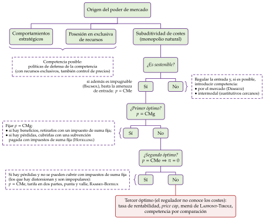
Fuente: elaboración propia a partir del policy roadmap de Braeutigam (1989).
I.2. Definición del mercado relevante
a) Idea
Un precio solo se puede subir si los clientes no tienen adónde ir. Si les basta con pasarse a otro producto o comprar fuera de la zona, ser el único vendedor de algo no da poder. Por eso el primer paso, antes de calcular cuotas, es acotar el mercado relevante (de referencia, en la terminología de la Comisión): los productos y las zonas que se disciplinan mutuamente (Comisión Europea, 2024).
Ni muy estrecho (casi toda empresa sería un monopolio) ni muy amplio (todo es en algún grado sustitutivo de todo): debe recoger las interacciones principales entre las empresas, y depende del uso que se le vaya a dar (Tirole, 1988, 12-13) [ver tema 3.A.18].
Se usa en el control de concentraciones (para calcular las cuotas y los índices), en los casos de abuso de posición dominante (para saber si la hay), en los acuerdos (umbrales de exención) y en la regulación ex ante de las telecomunicaciones, donde la Comisión recomienda qué mercados deben analizar los reguladores nacionales (Comisión Europea, 2020).
b) Modelo: el test del monopolista hipotético
i) Supuestos
El mercado de producto reúne los productos que los clientes consideran sustituibles por sus características, su precio y su uso; el mercado geográfico, la zona en la que las condiciones de competencia son suficientemente homogéneas y distintas de las de las zonas vecinas (Comisión Europea, 2024).
La disciplina principal es la sustitución por el lado de la demanda; la del lado de la oferta (empresas que podrían pasar a producir el bien enseguida y sin grandes costes) solo cuenta si es tan inmediata como la de la demanda, y la competencia potencial se valora después, al juzgar el poder de mercado.
ii) Desarrollo
El test del monopolista hipotético, o SSNIP (del inglés small but significant non-transitory increase in price), nace en las directrices de concentraciones de Estados Unidos de 1982 (U.S. Department of Justice, 1982). La Comisión lo aplica así (Comisión Europea, 2024, punto 29 y nota 53):
se parte del producto y de la zona de las empresas investigadas: el mercado candidato;
la pregunta: un monopolista hipotético de ese conjunto, ¿ganaría encareciéndolo de forma «pequeña, pero significativa y no transitoria», que suele ser un 5-10 %?;
si la respuesta es no, porque la clientela huye hacia otros productos o zonas, el conjunto se amplía con el sustitutivo más próximo y se vuelve a preguntar;
el mercado relevante es el menor conjunto para el que la subida sí es rentable (gráfico 2).
La subida es rentable si las ventas que se pierden no superan la pérdida crítica, \(\ell^{c}=\tau/(\tau+\mathcal{L})\), con \(\tau\) la subida relativa del precio y \(\mathcal{L}\) el margen relativo inicial, el índice de Lerner (1) (Harris y Simons, 1989) (anexo B): con una subida del 5 % y un margen del 20 %, basta con perder menos del 20 % de las ventas.
Apliquémoslo a Redes del Valle. Mercado candidato: la distribución de electricidad en su comarca. Si un monopolista hipotético de esa red subiera los peajes un 5-10 %, ¿cuántos clientes se desconectarían para producir su propia electricidad con placas y baterías, o pasarían la calefacción al gas? Muy pocos: vivir sin red cuesta todavía mucho más. La subida es rentable, y el mercado relevante es la distribución eléctrica en la comarca; el geográfico es la zona de su red, porque nadie puede conectarse a la red de la comarca vecina.
La comercialización de electricidad es otro mercado: si una comercializadora sube su precio un 5 %, sus clientes se van a otra en pocos días. Es un mercado nacional con muchas empresas. El mercado relevante ya dice qué hay que regular: la red, no la venta.
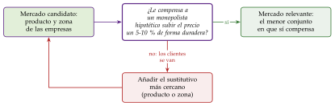
iii) Implicaciones
Falacia del celofán. En 1956, el Tribunal Supremo de Estados Unidos absolvió a du Pont, que vendía cerca del 75 % del celofán del país, porque el celofán competía con los demás envoltorios flexibles (Supreme Court of the United States, 1956). Pero la sustitución que se observaba era la que había a un precio ya de monopolio: el monopolista sube el precio hasta el tramo elástico de la demanda, donde \(|\varepsilon_{q,p}|=1/\mathcal{L}>1\) (1), y allí ninguna subida adicional es rentable.5 Si se aplica el test a los precios vigentes de una empresa dominante, el mercado sale más amplio de lo que es y la empresa parece no tener poder (Comisión Europea, 2024, n. 55). Por eso, en los casos de abuso la referencia debería ser el precio competitivo; en las concentraciones, que miran al futuro, se usan los precios vigentes.
Definir el mercado es el primer paso, no el diagnóstico: dentro de un mercado bien definido puede haber mucha competencia o ninguna.
c) Extensiones
Herramientas: las elasticidades propia y cruzada de la demanda y los ratios de desvío (qué parte de las ventas perdidas va a cada rival); la correlación de los precios, que es como mucho una condición necesaria (Stigler y Sherwin, 1985); los flujos de comercio, para el mercado geográfico (Elzinga y Hogarty, 1973); las características y los usos del producto, las encuestas a clientes y los costes de cambiar de proveedor.
Productos de precio cero: cuando el usuario no paga (un buscador, una red social), subir un 5 % un precio nulo carece de sentido. La Comunicación admite entonces medir la reacción a un empeoramiento de la calidad, la SSNDQ (small but significant non-transitory decrease in quality), que la Comisión ya aplicó en el caso Google Android (Comisión Europea, 2024, punto 30 y nota 54).
Mercados de 2 lados: las plataformas reúnen a 2 grupos (compradores y vendedores, usuarios y anunciantes) que ganan con que el otro sea grande; la Comunicación permite definir un mercado para toda la plataforma o uno para cada lado, según la fuerza de esos efectos cruzados, y el precio cero de un lado no impide que haya mercado (Comisión Europea, 2024, puntos 94-98) (III.3).
d) Valoración
La definición es binaria (un producto está dentro o fuera), y con productos diferenciados exagera o subestima la competencia: 2 marcas pueden estar en el mismo mercado y ser sustitutivos lejanos. Por eso se han propuesto medidas directas de la presión al alza sobre los precios que no necesitan definir el mercado (Farrell y Shapiro, 2010), que las directrices de Estados Unidos de 2023 usan junto al test (U.S. Department of Justice y Federal Trade Commission, 2023).
Aun así, sigue siendo el punto de partida de la práctica: delimitado el mercado, se mide el poder y se decide si basta la defensa de la competencia o hace falta regular, que es lo que vemos a continuación.
I.3. Regulación óptima con información completa
Una vez definido el mercado y medido el poder, ¿qué haría un regulador benevolente, que maximiza el excedente total, e informado, al que no se le escapa ni la tecnología de la empresa ni la disposición a pagar de los clientes? Es la teoría tradicional de la regulación, pensada para el monopolio natural («La regulación económica: el problema del monopolio natural», 2006) [ver tema 3.A.17].
El monopolio natural
Un mercado es un monopolio natural si la función de costes es subaditiva en la producción relevante: producirlo todo en una sola empresa es más barato que repartirlo entre varias, \(C\big(\sum_jq_j\big)<\sum_jC(q_j)\) (Baumol, 1977). Las economías de escala en todo el tramo son suficientes, pero no necesarias: con un producto, hay subaditividad también con el coste medio ya creciente, entre su mínimo, \(q^0\), y la cantidad a partir de la cual 2 empresas son más baratas que una, \(q^1\) (gráfico 3) [ver tema 3.A.17]. Es una configuración de costes y de demanda: con el tiempo, el crecimiento de la demanda o un cambio técnico pueden hacerla desaparecer, y eso es lo que justifica liberalizar (III.3).
Es sostenible si existe un precio que cubre costes atendiendo toda la demanda y al que ningún entrante gana vendiendo una parte; si no lo es, la regulación tiene que ocuparse también de la entrada (Panzar y Willig, 1977; Baumol, Bailey y Willig, 1977).
Aquí está el dilema, en 3 pasos:
no conviene desmantelarlo: con una sola empresa se produce al menor coste, que es la eficiencia productiva;
tampoco conviene dejarlo libre: cobraría como un monopolista y se perdería eficiencia asignativa;
y el regulador no debe pasarse exigiendo eficiencia asignativa: cuanto más se acerque el precio al coste marginal, mayores serán las pérdidas de la empresa.
Regular un monopolio natural es, por tanto, buscar el punto medio entre la eficiencia asignativa y la viabilidad financiera de la empresa, y el punto elegido depende de cuánto pese cada objetivo y de lo que sepa el regulador.
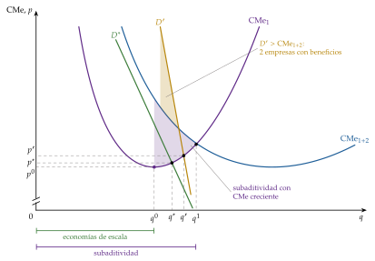
Primer óptimo y segundos óptimos
Primer óptimo (first best): \(p=\mathrm{CMg}\) (Hotelling, 1938).6 Si con ese precio la empresa gana dinero (la demanda corta al coste marginal por encima del coste medio), basta un impuesto de suma fija que le retire los beneficios. Si la demanda corta en el tramo decreciente del coste medio, \(\mathrm{CMg}<\mathrm{CMe}\) y la empresa pierde \((\mathrm{CMe}-\mathrm{CMg})\,q\) (gráfico 4), que hay que cubrir con una subvención. Esa subvención sale de impuestos que distorsionan, de modo que cada euro transferido le supone a la sociedad \(1+\lambda\), con \(\lambda>0\) el coste sombra de los fondos públicos; además, una empresa con las pérdidas cubiertas pierde interés en abaratar. Por eso, aunque en teoría el primer óptimo se alcanza con transferencias de suma fija, en la práctica la subvención exige impuestos que distorsionan y es impopular, y se buscan los segundos óptimos.
Segundos óptimos (second best), que cubren los costes sin subvención [ver tema 3.A.22]:
precio igual al coste medio: beneficio nulo y la mayor cantidad sin pérdidas, con una pérdida de eficiencia pequeña;
tarifa en dos partes, \(T(q)=A+p\,q\) con \(A=\mathrm{CF}/n\) y \(p=\mathrm{CMg}\) (Coase, 1946): eficiente en el margen mientras la cuota fija no expulse a nadie (Oi, 1971);
tarifas de punta y valle: quien usa la capacidad en las horas punta paga, además del coste de operación, el coste de la capacidad, que se dimensiona para la punta; en el valle solo se paga el de operación (Boiteux, 1949; Steiner, 1957);
precios de Ramsey-Boiteux, para el monopolio natural multiproducto, que maximizan el excedente total con beneficio no negativo (Ramsey, 1927; Boiteux, 1956): \[\frac{p_i-\mathrm{CMg}_i}{p_i}=\frac{\lambda}{1+\lambda}\cdot\frac{1}{|\varepsilon_{q_i,p_i}|}\qquad\forall i. \tag{3}\] Es la regla de Lerner (1) amortiguada: el número de Ramsey, \(\lambda/(1+\lambda)\in[0,1)\), crece con \(\lambda\), el multiplicador de la restricción presupuestaria; con \(\lambda=0\), \(p_i=\mathrm{CMg}_i\), y si \(\lambda\to\infty\), cada precio sería el de monopolio. Se carga más margen donde la demanda es menos elástica.
Volvamos a Redes del Valle. Su red cuesta unos 90 millones de euros al año, casi todo fijo, y llevar un kilovatio hora más por un cable ya tendido apenas cuesta: con \(p=\mathrm{CMg}\) perdería los 90 millones. La factura eléctrica española usa la solución de Coase: un término de potencia, fijo según la potencia contratada, y un término de energía por kilovatio hora; y los peajes son más caros en las horas punta, para las que se dimensiona la red (Comisión Nacional de los Mercados y la Competencia, 2020).
La lógica de Ramsey está también en los cánones ferroviarios: los de ADIF cubren el coste directamente imputable a cada circulación y añaden recargos, según lo que pueda soportar cada segmento del mercado, hasta recuperar el coste total (Jefatura del Estado, 2015b; Parlamento Europeo y Consejo de la Unión Europea, 2012).
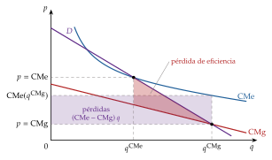
Fuente: elaboración propia a partir de Braeutigam (1989).
Valoración: lo que exige al regulador
Todas estas reglas suponen que el regulador conoce los costes (y, para Ramsey-Boiteux, las elasticidades) y que solo le mueve el bienestar. Pero la información está en manos de la empresa regulada, que tiene incentivos a declarar costes altos y, si se le cubren, a no reducirlos.
Además, con otras distorsiones en la economía, estos precios dejan de ser los segundos óptimos (Lipsey y Lancaster, 1956) [ver tema 3.A.22]. Por ejemplo, si el monopolista contamina, romper el monopolio sin gravar la contaminación puede reducir el bienestar: el monopolio, al producir menos, contamina menos (Buchanan, 1969).
Recapitulación: el poder de mercado aleja al mercado del óptimo; se mide en un mercado relevante que hay que delimitar; y, con información completa, el regulador sabe qué precios fijar. Pasamos al segundo bloque, que levanta el supuesto de información.
II. Desarrollos en presencia de información asimétrica
En el cante: el marco de agencia y la tabla de lo que observa el regulador como apoyo, y Averch-Johnson con su gráfico (2′); Loeb-Magat de palabra y Baron-Myerson con su gráfico y el ejemplo (2′); Laffont-Tirole con la condición del esfuerzo recuadrada, la tabla del ejemplo como apoyo y el menú a mano (3′30″); la regla del price cap y su senda (2′); y el compromiso y la captura, con la condición de Peltzman (1′30″); Becker no se canta. La escala de la potencia (gráfico 9) se va completando en la franja de abajo de la pizarra: cada instrumento se coloca en ella al estudiarlo.
Una vez vista la regulación de un regulador que lo sabe todo, pasamos a la de uno que sabe menos que la empresa. La conclusión anticipada del bloque: con información asimétrica no se puede alcanzar el primer óptimo; para que la empresa eficiente no se haga pasar por ineficiente hay que dejarle una renta informativa, y la regulación óptima equilibra los incentivos a reducir costes con la extracción de esas rentas.
«Más sabe el loco en su casa que el cuerdo en la ajena», dice el refrán: la empresa regulada sabe de sus costes más que el regulador más sabio, y toda la regulación con información asimétrica gira en torno a eso.
II.1. El problema de información y la regulación por coste del servicio
El problema de información
Se levanta el supuesto 5 (tabla 1). La nueva economía de la regulación trata la relación como una de agencia: el regulador es el principal y la empresa, el agente [ver tema 3.A.13]. La información asimétrica toma 2 formas:
selección adversa: la empresa conoce su tecnología, su tipo de coste, antes de que se fije la regulación, y puede declarar un coste mayor que el real;
riesgo moral: el esfuerzo de los directivos por abaratar costes no se ve, de modo que un coste elevado puede venir de una tecnología peor o de la desidia.
La renta informativa es el pago extra que evita que la empresa eficiente se haga pasar por ineficiente. Responde a la misma lógica que la discriminación de segundo grado [ver tema 3.A.17] y el diseño de mecanismos: el principio de revelación permite limitarse a contratos en los que cada tipo prefiere decir la verdad, sujetos por tipo a una restricción de participación (\(\mathrm{PC}_i\)) y a otra de compatibilidad de incentivos (\(\mathrm{IC}_i\)) [ver tema 3.A.14].
Los resultados son terceros óptimos (I.3), y los modelos se ordenan por lo que el regulador observa (tabla 3).
| Modelo | Qué observa el regulador | Incentivo a reducir costes | Rentas de la empresa |
|---|---|---|---|
| Tasa de rentabilidad (II.1) | beneficio contable y capital | bajo (salvo el desfase) | bajas; sobrecapitaliza |
| Loeb-Magat (II.2) | la demanda | máximo | todo el excedente |
| Baron-Myerson (II.2) | la distribución de los costes | no hay esfuerzo | renta informativa |
| Laffont-Tirole (II.3) | el coste realizado, no el esfuerzo | alto en el eficiente | renta informativa |
| Price cap (II.4) | nada del coste durante el periodo | máximo | altas si \(X\) es bajo |
| Yardstick (III.1) | los costes de las demás | máximo | bajas |
Fuente: elaboración propia a partir de Laffont y Tirole (1993) y Armstrong y Sappington (2007).
Regulación de la tasa de rentabilidad: efecto Averch-Johnson
a) Idea
La forma más antigua de regular sin conocer los costes eficientes es la regulación por coste del servicio o de la tasa de rentabilidad: el regulador fija precios que cubren los costes de operación contables y dan al capital invertido (la base de activos) una rentabilidad «justa». Dominó en Estados Unidos durante buena parte del siglo XX. Su atractivo es informativo: el regulador no conoce los costes eficientes, pero sí datos contables que se auditan con facilidad, el beneficio y el capital.
La pregunta de Averch y Johnson (1962): ¿qué distorsión crea limitar la rentabilidad del capital?
b) Modelo
i) Supuestos
Un monopolista con función de producción \(q=F(z_K,z_L)\), demanda inversa \(p(q)\) y precios de los factores \(w_K\) (coste del capital) y \(w_L\).
El regulador le permite una rentabilidad máxima \(s\) sobre el capital,7 mayor que su coste, \(s>w_K\) (si no, la empresa no invertiría), y menor que la que obtendría sin regular (si no, no sería una restricción).
ii) Desarrollo
La empresa resuelve \[\begin{array}{rl}\displaystyle \max_{z_K,z_L} & \displaystyle B=p(q)\,q-w_Kz_K-w_Lz_L \\ \text{s.a.} & q=F(z_K,z_L) \\ & \dfrac{p(q)\,q-w_Lz_L}{z_K}\leq s\end{array}\] La restricción equivale a \(B\leq(s-w_K)\,z_K\): el beneficio permitido crece con el capital.
Gráficamente, en el plano \((z_K,B)\) (gráfico 5), el beneficio sin restricción tiene forma de U invertida, porque en algún momento la productividad marginal del capital cae mientras su coste sigue constante, con un máximo en \(z_K^{*}\). El beneficio permitido es la recta \((s-w_K)\,z_K\). Si \(z_K^{*}\) queda por encima de la recta, no está permitido, y la empresa elige el mayor beneficio permitido, en \(z_K'>z_K^{*}\): sobrecapitaliza.
Analíticamente, con la restricción activa y su multiplicador \(0<\mu<1\) (anexo A.1): \[\mathrm{RMST}_{LK}=\frac{\mathrm{PMg}_L}{\mathrm{PMg}_K}=\frac{w_L}{w_K-\frac{\mu}{1-\mu}\,(s-w_K)}>\frac{w_L}{w_K}. \tag{5}\]
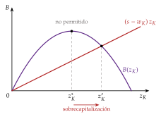
Fuente: elaboración propia a partir de Averch y Johnson (1962).
iii) Implicaciones
Es el efecto Averch-Johnson: como cada euro de capital agranda la base sobre la que se le deja ganar, la empresa usa más capital del que minimizaría costes, igual que si el capital le resultara más barato. El resultado es ineficiencia productiva (costes y precios por encima de los de la combinación eficiente), aunque su beneficio esté vigilado y acotado.
Tampoco le interesa abaratar: cualquier ahorro acabará rebajando su tarifa cuando el regulador la vuelva a calcular. En la escala de la potencia de los incentivos (gráfico 9), la tasa de rentabilidad está en el extremo de la baja potencia.
Volvamos a Redes del Valle. Si la CNMC le reconoce un 6,58 % sobre sus activos y su capital le cuesta menos, le conviene cambiar un transformador antes de tiempo (un activo, que se retribuye) en lugar de alargar su vida con más mantenimiento (un gasto, que solo se le reembolsa): el sesgo hacia el capital del modelo.
c) Extensiones
Desfase regulatorio: si las tarifas se revisan cada pocos años, entre una revisión y otra la empresa se queda con lo que ahorra, y eso le devuelve algo de incentivo a reducir costes (Baumol y Klevorick, 1970; Joskow, 1974).
Calidad: parte de la sobreinversión puede ser más calidad o seguridad de suministro, que el regulador valora pero no puede exigir directamente.
d) Evidencia empírica
Los primeros contrastes, con eléctricas de Estados Unidos, confirmaron la sobrecapitalización (Spann, 1974; Courville, 1974); la evidencia posterior es mixta, en parte porque los reguladores vigilaban más el nivel de los precios que la tasa de rentabilidad (Joskow, 1974).
En España, la retribución de las redes de electricidad y de gas aplica una tasa de retribución financiera al valor de los activos regulados (Comisión Nacional de los Mercados y la Competencia, 2019): el 6,58 % en la electricidad para 2026-2031 (Comisión Nacional de los Mercados y la Competencia, 2025e) y el 6,46 % en el transporte y la regasificación de gas para 2027-2032 (Comisión Nacional de los Mercados y la Competencia, 2026d). Las tarifas de la corriente de tracción que ADIF cobra a las empresas ferroviarias se fijan a partir de sus costes, con supervisión de la CNMC (Comisión Nacional de los Mercados y la Competencia, 2018b).
e) Valoración
Ventajas: necesita poca información (datos contables auditables) y da a la empresa seguridad de que recuperará sus inversiones hundidas, lo que favorece la inversión en redes.
Inconvenientes:
la sobrecapitalización;
regula la remuneración contable del capital, que no es el beneficio económico;
no da incentivos a reducir costes ni a innovar, salvo por el desfase regulatorio;
la empresa tiene incentivos a exagerar sus costes en cada revisión.
Por eso los reguladores la combinan con incentivos: la nueva metodología de la CNMC para la distribución eléctrica compara de forma conjunta la inversión y los gastos de operación (enfoque TOTEX) con unos costes de referencia, para quitar el sesgo hacia el capital (Comisión Nacional de los Mercados y la Competencia, 2025c). Para ir más allá hay que preguntarse cuál es el mejor contrato cuando el regulador no conoce los costes, que es lo que hacen los modelos que siguen.
II.2. Selección adversa: Loeb-Magat y Baron-Myerson
La tasa de rentabilidad no le pregunta nada a la empresa. Los 2 modelos que siguen son los primeros que tratan la regulación como un problema de información: el regulador no conoce el coste de la empresa y diseña un mecanismo para que lo revele.
Mecanismo de Loeb y Magat (1979)
a) Idea
Si el problema es que la empresa no quiere revelar su coste, ¿se puede diseñar una regla que no lo necesite? Loeb y Magat (1979) responden que sí, si el regulador conoce la demanda.
b) Modelo
i) Supuestos
El regulador conoce la demanda inversa \(p(q)\) y, con ella, el valor bruto que los consumidores dan a la cantidad \(q\), \(S(q)\equiv\int_0^q p(x)\,dx\), con \(S'(q)=p(q)\); no conoce el coste \(C(q)\). Las transferencias no tienen coste social.
ii) Desarrollo
La empresa fija libremente el precio y recibe, además de sus ventas, una subvención igual al excedente del consumidor que genera, \(S(q)-p(q)\,q\). Su beneficio es entonces \[p(q)\,q+\big[S(q)-p(q)\,q\big]-C(q)=S(q)-C(q)=\mathrm{ET}(q),\] el excedente total: al maximizarlo elige \(p(q)=\mathrm{CMg}(q)\), la cantidad eficiente, cualquiera que sea su coste y sin revelarlo.
iii) Implicaciones
Convierte a la empresa en reclamante residual de todo el excedente y así alinea sus intereses con los sociales: es un mecanismo de Groves, en el que actuar de forma eficiente es una estrategia dominante (Laffont y Martimort, 2002) [ver tema 3.A.14] [ver tema 3.A.23].
c) Valoración
Logra la eficiencia, pero a cambio el regulador tiene que conocer la demanda y la empresa se embolsa todo el excedente: solo tiene sentido si financiar transferencias no cuesta nada y el reparto da igual. Se puede corregir subastando el derecho a recibir el esquema, de modo que la puja devuelva la renta al Estado [ver tema 3.A.14].
El problema, por tanto, no es la eficiencia, sino las rentas: el monopolista se queda con todo el excedente. El modelo siguiente hace costosas esas rentas y las recorta, a cambio de algo de eficiencia.
Modelo de Baron y Myerson (1982)
a) Idea
En Baron y Myerson (1982) la regulación es un problema de selección adversa en el que el regulador pondera el beneficio empresarial por debajo del excedente de los consumidores. Ceder rentas tiene, pues, un coste, y hay que decidir cuánta eficiencia se sacrifica para reducirlas.
b) Modelo
i) Supuestos
La empresa tiene un coste marginal constante que solo ella conoce: bajo, \(\underline{\beta}\), con probabilidad \(\nu\), o alto, \(\overline{\beta}\), con probabilidad \(1-\nu\), con \(\Delta\beta\equiv\overline{\beta}-\underline{\beta}>0\). La distribución es conocimiento común.
A cada tipo se le propone un par cantidad-pago, \((\underline{q},\underline{t})\) y \((\overline{q},\overline{t})\), y su renta es lo que cobra menos lo que gasta: \(\underline{U}=\underline{t}-\underline{\beta}\,\underline{q}\) y \(\overline{U}=\overline{t}-\overline{\beta}\,\overline{q}\).
El bienestar es \(S(q)-t+\alpha\,U\), con \(\alpha\in[0,1)\) el peso del beneficio de la empresa: un euro de renta resta \(1-\alpha\) de bienestar.
ii) Desarrollo
El regulador maximiza el bienestar esperado con una restricción de participación y otra de compatibilidad de incentivos por tipo: \[\begin{array}{rl}\displaystyle \max_{\underline{q},\overline{q},\underline{U},\overline{U}} & \displaystyle \nu\big[S(\underline{q})-\underline{\beta}\,\underline{q}-(1-\alpha)\,\underline{U}\big]+(1-\nu)\big[S(\overline{q})-\overline{\beta}\,\overline{q}-(1-\alpha)\,\overline{U}\big] \\ \text{s.a.} & \underline{U}\geq\overline{U}+\Delta\beta\,\overline{q}\quad(\mathrm{IC}_1) \\ & \overline{U}\geq\underline{U}-\Delta\beta\,\underline{q}\quad(\mathrm{IC}_2) \\ & \underline{U}\geq 0,\quad \overline{U}\geq 0\quad(\mathrm{PC}_1,\ \mathrm{PC}_2)\end{array}\] La empresa eficiente siempre puede elegir el contrato de la ineficiente y producir \(\overline{q}\) con un coste \(\Delta\beta\) menor por unidad: de ahí \(\mathrm{IC}_1\).
En el óptimo solo aprietan la compatibilidad de incentivos de la eficiente y la participación de la ineficiente (anexo A.2): \[\overline{U}=0,\qquad \underline{U}=\Delta\beta\,\overline{q};\qquad\qquad p(\underline{q})=\underline{\beta},\qquad p(\overline{q})=\overline{\beta}+(1-\alpha)\,\frac{\nu}{1-\nu}\,\Delta\beta>\overline{\beta}. \tag{7}\]
iii) Implicaciones
No hay distorsión arriba: la empresa eficiente produce la cantidad eficiente.
Distorsión abajo: a la ineficiente se le encarga menos cantidad, con un precio superior a su coste marginal, porque cada unidad suya obliga a ceder \(\Delta\beta\) más de renta a la eficiente. El recargo sube con la probabilidad de la eficiente (\(\nu\)), con la diferencia de costes (\(\Delta\beta\)) y cuanto menos cuenta el beneficio (\(\alpha\)); si \(\alpha=1\), las rentas no cuestan nada y la distorsión desaparece.
La regulación óptima acepta ineficiencia asignativa para extraer rentas: es el resultado de la discriminación de segundo grado [ver tema 3.A.17] y de la autoselección [ver tema 3.A.13], ahora con el regulador como principal.
Volvamos a Redes del Valle, ahora con un coste por unidad de 20 o de 40 euros (con la misma probabilidad), una demanda \(p(q)=100-q\) y un regulador que no valora su beneficio (\(\alpha=0\)). Con información completa produciría 80 si es eficiente y 60 si no. Con información asimétrica, a la ineficiente se le piden 40 al precio de 60 (7); la eficiente produce 80 y se queda una renta de \(20\times 40=800\), en lugar de los \(20\times 60=1.200\) que tendría sin la distorsión (gráfico 6).
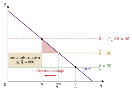
Fuente: elaboración propia a partir de Baron y Myerson (1982) y Laffont y Martimort (2002, cap. 2).
c) Extensiones
Con un continuo de tipos, el regulador fija el precio igual a un coste virtual, el coste más un recargo informativo que crece con el peso de los tipos más eficientes (Baron y Myerson, 1982), como el valor virtual de la subasta óptima [ver tema 3.A.14].
Si los tipos eficientes son muy probables, puede convenir cerrar la ineficiente para no dejar renta: en el ejemplo, si \(\nu\geq 3/4\).
d) Valoración
Supone que el regulador puede comprometerse con el contrato y que el coste solo depende de la tecnología: la empresa no puede esforzarse para reducirlo. Si puede, el coste observado mezcla suerte y esfuerzo, que es lo que añaden Laffont y Tirole.
II.3. Selección adversa y riesgo moral: el menú de contratos de Laffont y Tirole
a) Idea
Laffont y Tirole (1986) aplican la teoría de la agencia a la regulación y a la contratación pública: el regulador (principal) contrata con una empresa (agente) que sabe más que él sobre su eficiencia y cuyo esfuerzo no ve (Laffont y Tirole, 1993). Es el modelo canónico de la nueva economía de la regulación.
Añade a Baron y Myerson 2 cosas: el riesgo moral (la empresa puede bajar su coste esforzándose) y una razón para que las rentas cuesten: cada euro transferido se financia con impuestos que distorsionan.
Toda la teoría tradicional tropezaba con lo mismo: las buenas reglas exigen información que tiene la empresa. Al tratar la regulación como un mecanismo de incentivos, en el que el regulador hace de principal y la empresa de agente, la nueva economía de la regulación de los años 80 cubre los 2 problemas: la selección adversa, con mecanismos que hagan revelar los costes, y el riesgo moral, con reglas que premien el esfuerzo. Si el coste depende a la vez del esfuerzo inversor de la empresa y de factores que nadie controla, el regulador tiene que equilibrar la eficiencia productiva, de hoy y de mañana, con las rentas que deja a la empresa, las rentas de la información: es buscar el reparto del riesgo que dé incentivos suficientes para reducir costes.
b) Modelo
i) Supuestos
Un proyecto de tamaño dado (la red que hay que mantener) de valor social \(S\). El coste observado es \(C=\beta-e\), con \(\beta\) la eficiencia intrínseca de la empresa (información oculta: baja, \(\underline{\beta}\), con probabilidad \(\nu\), o alta, \(\overline{\beta}\); \(\Delta\beta\equiv\overline{\beta}-\underline{\beta}\)) y \(e\) el esfuerzo de sus gestores en reducir costes (acción oculta), que les cuesta \(\psi(e)\), creciente y convexa (\(\psi'>0\), \(\psi''>0\)).
El regulador observa \(C\), pero no \(\beta\) ni \(e\): no sabe si un coste bajo se debe a la suerte de ser eficiente o al esfuerzo. Reembolsa el coste y paga una transferencia neta \(t\), que cuesta a la sociedad \(1+\lambda\) por euro, con \(\lambda>0\) el coste sombra de los fondos públicos.8
La empresa obtiene \(U=t-\psi(e)\) y acepta el contrato si \(U\geq 0\). El bienestar es el valor del proyecto menos su coste social, más la renta de la empresa; cada euro de renta cuesta \(\lambda\), así que el regulador quiere dejar la menor posible: \[W=S-(1+\lambda)\,(C+t)+U=S-(1+\lambda)\big[\beta-e+\psi(e)\big]-\lambda\,U.\]
ii) Desarrollo
Información completa: el regulador exige a cada tipo el esfuerzo que minimiza \(\beta-e+\psi(e)\), \(\psi'(e^{*})=1\) (el último euro de desutilidad del esfuerzo ahorra un euro de coste), y no deja rentas: \(U=0\).
Información asimétrica: la empresa eficiente puede llegar al coste de la ineficiente, \(\overline{C}=\overline{\beta}-\overline{e}\), esforzándose \(\Delta\beta\) menos. Para que no lo haga, hay que dejarle la renta informativa, que crece con el esfuerzo que se pide a la ineficiente: \[\Phi(\overline{e})\equiv\psi(\overline{e})-\psi(\overline{e}-\Delta\beta),\qquad \Phi'(e)=\psi'(e)-\psi'(e-\Delta\beta)>0.\]
El regulador resuelve \[\begin{array}{rl}\displaystyle \max_{\underline{e},\overline{e},\underline{U},\overline{U}} & \displaystyle \nu\big[S-(1+\lambda)\big(\underline{\beta}-\underline{e}+\psi(\underline{e})\big)-\lambda\underline{U}\big]+(1-\nu)\big[S-(1+\lambda)\big(\overline{\beta}-\overline{e}+\psi(\overline{e})\big)-\lambda\overline{U}\big] \\ \text{s.a.} & \underline{U}\geq\overline{U}+\Phi(\overline{e})\quad(\mathrm{IC}_1) \\ & \overline{U}\geq 0\quad(\mathrm{PC}_2)\end{array}\] En el óptimo, \(\overline{U}=0\) y \(\underline{U}=\Phi(\overline{e})\), y (anexo A.3)
\[\psi'(\underline{e})=1,\qquad \psi'(\overline{e})=1-\frac{\lambda}{1+\lambda}\cdot\frac{\nu}{1-\nu}\cdot\Phi'(\overline{e})<1\tag{9}\]
iii) Implicaciones
No hay distorsión arriba: la eficiente hace el esfuerzo óptimo y se queda una renta informativa.
Distorsión abajo: a la ineficiente se le pide menos esfuerzo del óptimo, y por eso tiene más coste, porque cada unidad de esfuerzo que se le exige aumenta la renta de la eficiente. Cuanto mayores son \(\lambda\) y \(\nu\), mayor es la distorsión; con \(\lambda=0\) desaparece.
El dilema de la regulación con información asimétrica es entre incentivos y extracción de rentas: dar más incentivos al esfuerzo deja más renta, y recortar la renta exige sacrificar eficiencia productiva. Es el mismo resultado que Baron y Myerson (7) y que la discriminación de segundo grado [ver tema 3.A.17].
«El que algo quiere, algo le cuesta», dice el refrán: si el regulador quiere que la empresa eficiente se esfuerce y no se haga pasar por ineficiente, tiene que pagarle una renta.
Sigamos con Redes del Valle, ahora con su coste anual de mantener la red: 100 millones de euros si es eficiente o 110 si no, con la misma probabilidad (\(\nu=\tfrac12\)), \(\psi(e)=e^2/40\) y \(\lambda=0{,}25\). Con información completa, \(\psi'(e)=e/20=1\): cada tipo se esfuerza \(e^{*}=20\), la eficiente cuesta 80 y la ineficiente 90, y a las 2 se les paga \(\psi(20)=10\) por el esfuerzo. Con información asimétrica, \(\Phi(e)=e/2-2{,}5\), \(\Phi'=\tfrac12\) y \(\psi'(\overline{e})=1-0{,}2\cdot1\cdot0{,}5=0{,}9\): se pide \(\overline{e}=18\) a la ineficiente, que cuesta 92, y la eficiente se queda una renta de \(\Phi(18)=6{,}5\) millones (tabla 4).
| Información completa | Información asimétrica | |||
| Eficiente | Ineficiente | Eficiente | Ineficiente | |
| Esfuerzo, \(e\) | 20 | 20 | 20 | 18 |
| Coste, \(C=\beta-e\) | 80 | 90 | 80 | 92 |
| Transferencia, \(t\) | 10 | 10 | 16,5 | 8,1 |
| Renta, \(U=t-\psi(e)\) | 0 | 0 | 6,5 | 0 |
| Pago total, \(C+t\) | 90 | 100 | 96,5 | 100,1 |
Fuente: elaboración propia a partir de Laffont y Tirole (1993, cap. 1).
c) Extensiones
Puesta en práctica: un menú de contratos lineales. Con muchos tipos, y bajo condiciones de regularidad, el óptimo se alcanza dejando que la empresa elija entre contratos lineales en el coste (Laffont y Tirole, 1986; 1993, cap. 1), con \(C^a\) el coste que anuncia y \(b\in[0,1]\) la potencia del incentivo, la parte del sobrecoste que paga la empresa (gráfico 7): \[t(C)=a-b\,(C-C^a). \tag{10}\]
\(b=1\), contrato de precio fijo (fixed price): la empresa recibe en total \(C+t=a+C^a\) cueste lo que cueste, se queda con todo lo que ahorre y se esfuerza como en el óptimo; lo elige la eficiente;
\(b\to 0\), contrato de coste incrementado (cost plus): se le reembolsa casi todo el coste; no tiene incentivos al esfuerzo, pero tampoco renta; lo eligen los tipos menos eficientes.
Con un contrato de potencia \(b\) la empresa se esfuerza hasta \(\psi'(e)=b\); por eso la potencia que se ofrece a cada tipo baja con su ineficiencia, y cada tipo ocupa su lugar en la escala de la potencia (gráfico 9).9
Dicotomía precios-incentivos: si la empresa además vende al público, bajo ciertas condiciones los precios obedecen a la regla de Ramsey-Boiteux (3), con \(\lambda\) el coste de los fondos públicos, mientras que las transferencias se encargan por separado de limitar las rentas (Laffont y Tirole, 1993, cap. 3).
Más información: si una auditoría hace más probable que la empresa sea eficiente (sube \(\nu\)), el regulador distorsiona más a la ineficiente y la renta de la eficiente, \(\Phi(\overline{e})\), baja.
Subastas y dinámica: si se subasta el contrato, la competencia recorta la renta (III.2); si se repite sin compromiso, aparece el efecto trinquete (II.5).
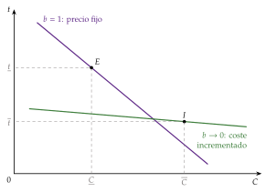
Fuente: elaboración propia a partir de Laffont y Tirole (1993, cap. 1).
d) Evidencia empírica
Los reguladores de las redes eléctricas han pasado de contratos de baja potencia a esquemas de incentivos y menús: el regulador británico de la energía ofrece a las empresas un menú de reparto del ahorro en el que quien presenta previsiones de gasto más bajas recibe una parte mayor de lo que ahorre, con la lógica del modelo; y esos esquemas han reducido los costes de operación (Joskow, 2014).
e) Valoración
Es la teoría normativa más completa de la regulación: da forma a la intuición de que el price cap (alta potencia) da incentivos y deja rentas, y la tasa de rentabilidad (baja potencia), al revés, y dice cuándo conviene cada uno.
Pero supone un regulador benevolente que se compromete, y que conoce la distribución de los tipos y la función \(\psi(\cdot)\). Los reguladores reales usan reglas más sencillas, como el price cap; y, si no se comprometen o pueden ser capturados, la recomendación cambia (II.5).
Para ampliar: «Jean Tirole on Regulated Markets», en la serie Nobel Perspectives (UBS, s. f.): Tirole explica su trabajo con Laffont sobre la regulación de los monopolios de servicios públicos y los contratos de incentivos.
II.4. Regulación por incentivos: precios máximos y esquemas intermedios
a) Idea
El menú de Laffont y Tirole pide mucha información. La regulación por incentivos de la práctica lo simplifica desligando el precio de los costes que declara la empresa. Su forma más conocida es el precio máximo (price cap), que Stephen Littlechild (1983) propuso para la privatización de British Telecom y que se extendió después al gas, el agua, la electricidad y los aeropuertos. Es un contrato de alta potencia, cercano al de precio fijo (\(b=1\) en (10)).
b) Modelo
i) Supuestos
Al principio de un periodo regulatorio de varios años, el regulador fija un nivel inicial de ingresos que permite recuperar los «costes razonables» de la empresa y, con él, un precio medio (o el de una cesta de servicios).
Mientras dura el periodo, el precio puede subir como mucho la inflación descontado un factor de eficiencia \(X\), que es la mejora de productividad exigida a la industria; precio y \(X\) se revisan al terminar.
ii) Desarrollo
La regla es
\[p_{t+1}\leq p_t\,(1+\mathrm{IPC}_t-X)\tag{11}\]
Cuanto mayor es \(X\), menos sube el precio y más ganancias de productividad pasan a los consumidores. Con la inflación y \(X\) constantes, el tope sigue la senda \(p_t=p_0\,(1+\mathrm{IPC}-X)^t\).10
Hasta la siguiente revisión, el tope no se mueve aunque cambien los costes: lo que la empresa ahorra se lo queda íntegro, igual que con un contrato de precio fijo.
Si el tope se aplica a la media de una cesta ponderada con las cantidades del periodo anterior, la empresa decide los precios relativos y acaba acercándose por sí sola a una estructura de tipo Ramsey-Boiteux, sin que el regulador tenga que estimar elasticidades (Vogelsang y Finsinger, 1979).
Volvamos a Redes del Valle con un price cap: si su peaje medio es de 40 euros por megavatio hora, la inflación del 2,5 % y \(X=1{,}5\), el año siguiente no puede pasar de \(40\times1{,}01=40{,}40\). Si consigue bajar sus costes un 3 % al año, se queda con la diferencia hasta la revisión, cuando el regulador ajustará el precio a los nuevos costes (gráfico 8).
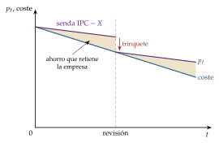
iii) Implicaciones
Para un \(X\) dado, el incentivo a reducir costes es mayor cuanto más largo es el periodo regulatorio, pero entonces se trasladan menos ganancias a los precios: la duración óptima equilibra los 2 efectos.
A diferencia de la tasa de rentabilidad, no distorsiona la combinación de factores: el capital no amplía el beneficio permitido. En la escala de la potencia (gráfico 9), está en el extremo \(b=1\).
c) Extensiones
Ingresos máximos (revenue cap): el tope recae sobre el ingreso total y no sobre el precio, y así la empresa no gana empujando el volumen en redes cuyo coste apenas depende de él. Es la lógica del modelo RIIO de Ofgem, el regulador británico de la energía: ingresos permitidos para varios años, inversión y gasto de operación tratados en bloque y desviaciones compartidas con los consumidores; su tercera edición abarca 2026-2031 (Ofgem, 2025a).
Esquemas intermedios: entre la tasa de rentabilidad (baja potencia, sin rentas) y el price cap (alta potencia, con rentas) caben el reparto de beneficios o escala móvil, en el que la empresa conserva solo una fracción de lo que gane por encima de una banda de rentabilidad, y los menús de reparto del ahorro (Armstrong y Sappington, 2007). Todos admiten la forma de un precio lineal en el coste, con \(F\) una cuantía fija y \(b\) la potencia, la misma del menú (10) (\(b=0\), coste incrementado; \(b=1\), precio fijo): \[p=b\,F+(1-b)\,C.\]
Calidad: como ahorrar en calidad también es beneficio, los esquemas añaden incentivos y penalizaciones por calidad.
d) Evidencia empírica
British Telecom empezó en 1984 con un tope de RPI\(-\)3, el índice de precios minoristas menos 3 puntos (Armstrong, Cowan y Vickers, 1994). En la distribución y el transporte de electricidad, los esquemas de incentivos han reducido los costes de operación, pero obligan a vigilar la calidad y la inversión (Joskow, 2014).
En España, la cuota de abono de Telefónica siguió una regla \(\mathrm{IPC}-X\) hasta 2012 (Comisión Nacional de los Mercados y la Competencia, 2018a). Hoy el caso vivo es Aena: el Documento de Regulación Aeroportuaria (DORA) fija para 5 años un ingreso máximo por pasajero, que evoluciona con un índice de costes de insumos ajenos a la gestión de la empresa más un componente \(X\). El DORA 2027-2031 parte de 10,52 euros por pasajero en 2026 y llega a 10,69 en 2031, con una \(X\) del 0,33 % anual que aquí se suma (Dirección General de Aviación Civil, 2026); la CNMC había propuesto bajarlo un 0,59 % al año, y Aena, subirlo un 3,82 % (Comisión Nacional de los Mercados y la Competencia, 2026a). Una \(X\) positiva no es, por tanto, un descuento por productividad, sino el ajuste que cuadra los ingresos con los costes previstos.11
e) Valoración
Ventajas: incentiva la eficiencia productiva; traslada las mejoras a los consumidores a priori, con \(X\), y a posteriori, en cada revisión; es sencillo y no distorsiona la combinación de factores.
Inconvenientes:
hace falta mucha información para fijar el precio inicial y \(X\): si el precio es muy alto deja rentas, y si es muy bajo la empresa pierde y querrá renegociar;
al acercarse la revisión, la empresa retrasa mejoras para disfrutarlas en el ciclo siguiente;
puede deteriorar la calidad o aplazar inversiones de larga vida;
traslada más riesgo a la empresa, lo que puede encarecer su capital.
En el fondo, si en cada revisión el tope se recalibra a los costes, el price cap equivale a regular por coste del servicio con un desfase pactado de antemano: que funcione depende de que el regulador se comprometa, la cuestión del apartado siguiente.
II.5. Compromiso y captura: la teoría positiva de la regulación
Todos los modelos anteriores suponen un regulador que se compromete con el contrato y que solo busca el bienestar. Levantar esos 2 supuestos explica buena parte de lo que se observa en la práctica.
Compromiso: efecto trinquete y desfase regulatorio
Efecto trinquete (ratchet): si el regulador usa lo que observa hoy para fijar el objetivo de mañana, la empresa sabe que cada mejora se le quitará en la siguiente revisión, y no la hace o la oculta: un coste bajo hoy es una exigencia mayor mañana (Weitzman, 1980). Sin compromiso a largo plazo, a la empresa eficiente le conviene parecer ineficiente al principio, y el regulador tiene que dejarle más renta para que revele su tipo, o agruparla con la ineficiente (Freixas, Guesnerie y Tirole, 1985; Laffont y Tirole, 1988).
Desfase regulatorio (regulatory lag): el tiempo entre 2 revisiones, durante el que el precio no cambia aunque cambien los costes; cuanto más largo, más incentivos a reducir costes y menos traslado a los consumidores (Baumol y Klevorick, 1970; Joskow, 1974).
Detrás está la inconsistencia temporal que Kydland y Prescott (1977) describen para la política económica [ver tema 3.A.23] [ver tema 3.A.36]: con la red ya construida y la inversión hundida, al regulador le tienta bajar el precio al coste de operación, y la empresa, que lo prevé, invierte menos. Los antídotos: reglas pactadas por adelantado, periodos regulatorios largos y reguladores independientes que tengan una reputación que cuidar.
Captura del regulador: la teoría positiva de la regulación
a) Idea
Las teorías anteriores son normativas: dicen cómo debería regular un regulador benevolente. La teoría positiva de la regulación, de la escuela de Chicago, pregunta por qué se regula como se regula (J. den Hertog, 2000; J. A. den Hertog, 2010). La idea de la captura del regulador es antigua: según la teoría del ciclo de vida de las agencias de Bernstein (1955), el organismo nace para defender el interés público y, con los años, acaba sirviendo a la industria que regula, y Posner (1974) la contrapone a la teoría del interés público. George Stigler (1971) la convierte en teoría económica: por regla general, la industria adquiere la regulación, que se diseña y se aplica sobre todo en su beneficio.12
¿Por qué se deja capturar el regulador? Por varias razones:
con el tiempo aparecen otras prioridades y la vigilancia se relaja;
depende de la empresa para obtener la información que necesita, y evita enfrentarse a ella;
sus recursos son limitados y prefiere no acabar en los tribunales;
sus técnicos pueden acabar trabajando en las empresas reguladas.
Es como «poner al zorro a cuidar de las gallinas», dice el dicho: el regulador acaba sirviendo al regulado.
b) Modelo
i) Supuestos
La regulación es un bien que se demanda (los grupos que ganan con ella) y se ofrece (el regulador o el político, que buscan apoyos: votos, financiación, un puesto futuro).
Los productores son pocos, están organizados y tienen mucho en juego; los consumidores son muchos, cada uno con poco en juego y con el problema del polizón para organizarse: es la lógica de la acción colectiva de Olson (1965) [ver tema 4.B.2].13
ii) Desarrollo
Peltzman (1976) lo formaliza: el regulador elige el precio para maximizar su apoyo político, \(\mathcal{A}\big(p,B(p)\big)\), que baja con el precio (los consumidores) y sube con el beneficio de la industria, \(\partial\mathcal{A}/\partial p<0\) y \(\partial\mathcal{A}/\partial B>0\). La condición de primer orden exige \(B'(p)>0\): \[\frac{\partial\mathcal{A}}{\partial p}+\frac{\partial\mathcal{A}}{\partial B}\,B'(p)=0.\] El precio regulado queda por debajo del de monopolio, donde \(B'(p)=0\), y por encima del competitivo: el regulador reparte la renta entre los 2 grupos.
Becker (1983) lo modeliza como una competencia entre grupos de presión: gana influencia el grupo que presiona con menos coste, y la pérdida irrecuperable limita la propia regulación, porque cuanto mayor es, más se resiste el grupo perjudicado. Las intervenciones que sobreviven tienden a ser las que menos eficiencia destruyen.
iii) Implicaciones
La regulación puede servir para crear o proteger rentas, y no solo para corregir fallos de mercado: los contingentes, las licencias o las exenciones crean rentas de monopolio y se convierten en barreras de entrada injustificadas. Los aspirantes a monopolistas están dispuestos a gastar para lograr una regulación favorable; los consumidores, para evitarla, y el propio regulador y los trabajadores del sector, para participar de las transferencias. Esos recursos son un coste social, el de la búsqueda de rentas (Tullock, 1967; Krueger, 1974) (I.1).14
Para ampliar sobre la captura del regulador: ProMarket (Stigler Center, Universidad de Chicago) (2021), «Assessing George Stigler’s Economic Theory of Regulation»; el coloquio del Stigler Center «Who Will Regulate the Regulators: Stigler 50 Years Later» (Stigler Center (Universidad de Chicago), 2021), y la entrada «Regulatory capture, teoría de la captura» del semanario del CADEP (Centro de Análisis para la Decisión Pública (UFM), s. f.).
c) Extensiones
Para Laffont y Tirole (1991), la captura es un pacto colusorio: el regulador tiene información que el legislador ignora y puede callarla a cambio de un soborno o de un futuro empleo en la empresa. Los incentivos potentes aumentan las rentas en juego y, con ellas, la tentación; si el riesgo es alto, compensa recurrir a contratos de baja potencia, próximos al coste incrementado, aun a costa de eficiencia productiva.
Volvamos a Redes del Valle: si su sector presiona para subir la tasa de retribución y el riesgo de que el regulador pacte con la empresa es alto, mejor un contrato que deje poca renta que repartir, aunque la empresa se esfuerce menos.
d) Evidencia empírica
Stigler (1971) encontró que los límites de peso de los camiones en los estados de Estados Unidos protegían a los ferrocarriles y que las licencias profesionales favorecían a los que ya ejercían.
La desregulación de los años 70 y 80 en Estados Unidos (aviación, transporte por carretera) parecía contradecir la teoría, pero puede explicarse por cambios en lo que ganaban y perdían los grupos (Peltzman, 1989).
Las «puertas giratorias» entre reguladores y regulados son la vía de captura más estudiada (Dal Bó, 2006).
e) Valoración
Recuerda que hay que comparar los fallos del mercado con los de la regulación [ver tema 3.A.23], y justifica los reguladores independientes, las reglas transparentes, la evaluación de resultados y las incompatibilidades.
Pero es difícil de contrastar (casi todo se puede explicar como el apoyo de algún grupo) y no dice cómo diseñar el regulador, que es lo que añade el enfoque de Laffont y Tirole.
Recapitulación: con información asimétrica el regulador no puede alcanzar el primer óptimo: deja una renta informativa y equilibra incentivos y rentas. La tasa de rentabilidad (baja potencia) y el price cap (alta potencia) son los 2 extremos del menú de Laffont y Tirole, y el compromiso y la captura deciden hacia cuál inclinarse (gráfico 9). Pasamos al tercer bloque: cómo ayudan otras empresas a reducir esas rentas.
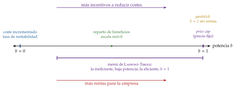
III. Regulación con varias empresas y aplicaciones prácticas
En el cante: el yardstick con su regla y el ejemplo de las 3 distribuidoras escritos a mano, y su lugar en la escala de la potencia (2′); la competencia por el mercado de palabra, con sus límites, y los mercados impugnables en una frase (1′30″); la liberalización y sus problemas, la regla del precio eficiente de los componentes en una línea y las formas de separación vertical con su gráfico y un ejemplo español de cada una; los mercados de 2 lados, en una frase (2′30″); y las aplicaciones, cada una con su lectura teórica, con la tabla de instrumentos como apoyo (1′30″). La excepción ibérica y el detalle de la DMA no se cantan.
Hasta ahora el regulador trataba con una sola empresa; ahora tiene varias. Conclusión anticipada de este último bloque: las demás empresas son una fuente de información, porque compararlas o hacerlas competir por la concesión rebaja la renta que hay que ceder a cada una. A cambio surge una cuestión nueva: en qué condiciones usan los rivales la red del antiguo monopolista. En la práctica se combinan todas estas herramientas.
III.1. Competencia por comparación
a) Idea
Si hay varias empresas reguladas parecidas que operan en zonas distintas (distribuidoras de electricidad o de agua, hospitales), el regulador puede fijar el precio de cada una a partir de los costes de las demás, no de los suyos: es la competencia por comparación (yardstick competition) (Shleifer, 1985; Baldwin, Cave y Lodge, 2012, cap. 26). Así crea entre monopolios locales una competencia que no existe en el mercado, y resuelve el problema de la revelación de costes.
«Las comparaciones son odiosas», dice el refrán, y para la empresa comparada lo son: ya no puede justificar sus costes con su propia contabilidad.
b) Modelo
i) Supuestos
\(N\) empresas idénticas, cada una con un coste unitario \(c_i\) que puede reducir invirtiendo \(R(c_i)\), con \(R'<0\) (bajar el coste cuesta), y una demanda \(q(p)\).
ii) Desarrollo
El regulador fija a la empresa \(i\) el precio y la transferencia \[p_i=\bar{c}_{-i}\equiv\frac{1}{N-1}\sum_{j\neq i}c_j,\qquad T_i=\bar{R}_{-i}\equiv\frac{1}{N-1}\sum_{j\neq i}R(c_j). \tag{12}\]
Como la empresa \(i\) no influye en su propio precio, maximiza \((\bar{c}_{-i}-c_i)\,q(\bar{c}_{-i})+T_i-R(c_i)\) eligiendo \(c_i\), y la condición de primer orden es \[-R'(c_i)=q(\bar{c}_{-i}):\] invierte hasta que el último euro ahorra un euro de coste. En el equilibrio simétrico todas eligen el coste eficiente, el precio es igual al coste y no hay rentas (anexo A.4).
iii) Implicaciones
La empresa no gana nada inflando sus costes, porque solo sube el precio de las demás; y si sus costes están por encima de la media de sus pares, solo se le paga esa media, así que reducirlos le compensa: tiene incentivos de precio fijo sin las rentas de un price cap mal calibrado. En la escala de la potencia (gráfico 9) está en \(b=1\), pero sin rentas.
Imaginemos que Redes del Valle tiene 2 vecinas parecidas y que sus costes son 20, 22 y 24 euros por megavatio hora (Redes del Valle es la de 20). Con la regla, el precio de cada una es la media de las otras 2: 23 para Redes del Valle, que gana 3 por megavatio hora; 22 para la segunda, que cubre costes, y 21 para la tercera, que pierde 3. A todas les conviene bajar costes, y, como todas lo hacen, el precio converge al coste eficiente.
c) Extensiones
Empresas heterogéneas: si las diferencias entre empresas son observables (densidad de clientes, orografía, clima), se corrige la comparación con una regresión o con fronteras de eficiencia (Shleifer, 1985).
Perturbaciones comunes: empresas parecidas sufren choques de coste parecidos, y la comparación filtra lo que no depende del esfuerzo (Armstrong y Sappington, 2007).
d) Evidencia empírica
La comparación exige medir la eficiencia relativa con el análisis envolvente de datos (DEA) o con la frontera estocástica (SFA) [ver tema 3.A.12] [ver tema 3.A.17].
En Alemania, el regulador fija los ingresos máximos de las distribuidoras eléctricas comparando su eficiencia con los 2 métodos, se queda con el valor más favorable (con un mínimo del 60 %) y exige eliminar la ineficiencia durante el periodo regulatorio (Bundesnetzagentur, 2026; Bundesministerium der Justiz, 2007).
Jamasb y Pollitt (2001) repasan la experiencia internacional en la regulación de la electricidad.
e) Valoración
Requisitos: empresas comparables, o corregir las diferencias observables; si no, se castiga a la empresa por su entorno y no por su esfuerzo.
Colusión: las empresas pueden ponerse de acuerdo en no reducir costes (Baldwin, Cave y Lodge, 2012); es el problema del cártel, más fácil con pocas empresas que se ven repetidamente [ver tema 3.A.19].
III.2. Competencia por el mercado e impugnabilidad
a) Idea
¿Es necesario regular? Demsetz (1968) responde que, aunque en el mercado solo quepa una empresa, se puede competir por él: el derecho exclusivo a prestar el servicio durante un plazo se subasta y se adjudica a quien pida el precio más bajo para una calidad fijada.
b) Modelo
i) Supuestos
Varios licitadores con acceso a la tecnología, que no se ponen de acuerdo, y un contrato que se puede especificar y hacer cumplir (precio y calidad).
ii) Desarrollo
Cada aspirante puja con el precio mínimo que le cubre costes. Si todos son iguales, el precio cae hasta el coste medio, \(p=\mathrm{CMe}\) (el segundo óptimo), sin que el regulador tenga que conocerlo. Si difieren, se impone el más eficiente con un precio próximo al coste del segundo: la subasta escoge a la empresa más eficiente [ver tema 3.A.14].
Hay competencia ex ante, al adjudicar, y ex post, si la subasta se repite cada cierto tiempo; cuantos más aspirantes, menor la renta del adjudicatario (Armstrong y Sappington, 2007).
iii) Implicaciones
La subasta sustituye al regulador como fuente de información: la competencia entre los aspirantes revela lo que cuesta prestar el servicio.
Si la comarca de Redes del Valle subastara la explotación de su red durante 20 años, quien ofreciera el peaje más bajo revelaría lo que de verdad cuesta mantenerla. El problema llegaría al cabo de los 20 años: ¿qué pasa con los transformadores y los cables, y quién los habrá cuidado si el concesionario no sabía si iba a seguir?
c) Extensiones
Laffont y Tirole (1987) combinan subasta e incentivos. Cuando lo que se licita es un contrato de incentivos, el adjudicatario firma un contrato lineal con un pago fijo ligado a la segunda mejor puja: la competencia le recorta así la renta informativa, y cuanto más eficiente dice ser, mayor es la fracción de los sobrecostes que asume.
Si el coste es en parte común e incierto, gana quien más lo infravaloró: la maldición del ganador, que lleva a pujar con prudencia [ver tema 3.A.14].
d) Evidencia empírica
Es la forma habitual de gestionar servicios locales (agua, recogida de residuos, transporte urbano) y autopistas. Pero las concesiones se renegocian a menudo: Guasch, Laffont y Straub (2008) estudian 307 concesiones de agua y de transporte adjudicadas en América Latina entre 1989 y 2000, con una alta incidencia de renegociaciones que depende de las instituciones regulatorias, de los choques económicos y del diseño de los contratos.
e) Valoración
Sus límites (Williamson, 1976):
la posible colusión entre los licitadores [ver tema 3.A.19];
con activos específicos y contratos largos e incompletos, es difícil prever todas las contingencias y valorar y transferir los activos al renovar, y la concesión acaba necesitando la misma supervisión que la regulación [ver tema 3.A.15];
el adjudicatario acumula ventajas de información y de aprendizaje que reducen la competencia en la renovación;
la duración plantea un dilema: si es corta, el concesionario no invierte en activos de larga vida ni los mantiene; si es larga, desaparece la competencia periódica.
Alternativa a la regulación: los mercados impugnables
La competencia por el mercado tiene una versión sin subasta: si el monopolio natural es sostenible y el mercado es perfectamente impugnable, la mera amenaza de entrada basta para disciplinarlo (Baumol, 1982; Baumol, Panzar y Willig, 1982) [ver tema 3.A.15]. Hacen falta 3 supuestos:
los entrantes tienen la misma tecnología y acceso a la misma demanda que la empresa instalada;
entrar y salir es libre y no hay costes hundidos: lo invertido se recupera al salir;
la instalada tarda en reaccionar más que los consumidores: el entrante toma su precio como dado.
Si la instalada gana dinero, un entrante cobra algo menos, se lleva el mercado y sale antes de que reaccione (hit and run). Por eso el único equilibrio es el precio igual al coste medio, el segundo óptimo, y sin regulación de precios.
2 aportaciones a la regulación y a la defensa de la competencia:
la estructura del mercado es una foto fija: importan las condiciones de entrada y salida más que el número de empresas, y es más útil rebajar las barreras que regular precios;
la amenaza de entrada disciplina también los costes: la instalada los minimiza para estar preparada si alguien entra.
Sus límites están en los supuestos 2 y 3:
los costes hundidos son la norma en las redes: los activos físicos se deprecian y su mercado de segunda mano sufre selección adversa (Akerlof, 1970), y lo invertido en capital humano, publicidad o trámites no se recupera;
el hit and run no es creíble si la instalada puede bajar el precio antes de que el entrante recupere lo invertido.
Por eso las industrias de red no son impugnables y siguen necesitando regulación.
III.3. Liberalización e industrias de red: acceso y separación vertical
Liberalización y re-regulación
Desde finales de los años 70, los sectores que se explotaban en monopolio, muchas veces por empresas públicas, se han abierto a la competencia. Empezó en Estados Unidos con la aviación (1978), el transporte por carretera y el ferrocarril (1980), bajo Jimmy Carter, y siguió con Ronald Reagan (Congreso de los Estados Unidos, 1978; Congreso de Estados Unidos, 1980a, 1980b); la de la aviación la impulsó Alfred Kahn, economista de la regulación, que presidía entonces el regulador aéreo (Joskow y Noll, 2012). En la Unión Europea llegó con las directivas de los 90 sobre las telecomunicaciones, la electricidad, el gas y el ferrocarril.15
Conviene no confundir 2 conceptos:
liberalizar una actividad es que deje de ser por ley el monopolio de una empresa y quede abierta a cualquiera: se quitan las barreras legales de entrada;
desregular es quitar normas. La liberalización de las industrias de red no ha sido una desregulación, sino una re-regulación: hay que separar las actividades competitivas de las que no lo son y regular el acceso a la red en los tramos que siguen siendo monopolio.
La teoría la justifica por 2 razones: los beneficios de la competencia (más cantidad, menores precios, más variedad y calidad) y la desaparición del monopolio natural en algunos tramos, por el cambio técnico o el crecimiento de la demanda (I.3). En la electricidad, el transporte y la distribución siguen siendo monopolios naturales, pero la generación y la comercialización no.
Una industria de red combina un activo no competitivo, con rasgos de monopolio natural (la red, el activo esencial), integrado verticalmente con actividades potencialmente competitivas aguas arriba o aguas abajo (la generación y la comercialización eléctricas, los trenes, las llamadas). Son industrias de red el ferrocarril, la electricidad, el gas, el agua y las telecomunicaciones.
Al liberalizar, el regulador se enfrenta a 4 problemas:
los costes de transición a la competencia (CTC): el antiguo monopolista hizo inversiones específicas, de larga vida, contando con la protección que le daba la ley, y con la competencia pueden dejar de ser rentables; se le compensa por sus «costes razonables»;16
el precio de acceso a la red, que decide cuánta competencia habrá en los tramos competitivos: la red es un cuello de botella, y su dueño, si compite aguas abajo, tiene incentivos a negar el acceso a sus rivales o a encarecerlo;
mantener los incentivos a invertir en la red y a mantenerla;
garantizar el servicio universal.
Las soluciones regulatorias son de 3 tipos: la competencia por el mercado (III.2), que subasta el monopolio y extrae ex ante sus rentas; la regulación del acceso a la red con precios regulados; y la separación vertical de las actividades competitivas y las que no lo son. Las 2 últimas plantean 2 preguntas:
si compite el dueño de la red en los servicios, ¿qué precio deben pagar los rivales por usarla? Si es alto, frena la entrada y puede llevar a duplicar la red sin necesidad; si es bajo, desanima la inversión en la red y deja entrar a rivales menos eficientes;
¿debe competir en los servicios? Integrado, aprovecha las economías de coordinación y de alcance, pero tiene incentivos a discriminar a sus rivales.
Regla del precio eficiente de los componentes
a) Idea
Si el incumbente vende el servicio final y además alquila la red a sus rivales, ¿cuánto debe cobrarles? Willig (1979) y Baumol y Sidak (1994) proponen la regla del precio eficiente de los componentes (ECPR, por sus siglas en inglés): el peaje tiene que compensar al incumbente por lo que cuesta dar el acceso y por el margen al que renuncia con cada cliente que se lleva el rival.
b) Modelo
i) Supuestos
El precio final \(p\) lo fija el regulador. Para el incumbente, proporcionar una unidad de acceso supone un coste \(c_a\), y completar el servicio, otro \(c_I\).
El rival paga un peaje \(A\) por unidad de acceso y añade su propio coste \(c_E\); el producto es homogéneo, así que cada venta del rival es una venta menos del incumbente.
ii) Desarrollo
El coste de oportunidad del incumbente por unidad cedida es su margen, \(p-(c_a+c_I)\); sumado al coste del acceso, el peaje queda en \[A=c_a+\big[p-(c_a+c_I)\big]=p-c_I. \tag{13}\] Con ese peaje, al entrante le salen las cuentas si \(A+c_E\leq p\), es decir, si \(c_E\leq c_I\) (anexo A.5).17
iii) Implicaciones
Al incumbente le da igual vender él o ceder el cliente, y la regla solo deja pasar a rivales que, en la parte del servicio en la que compiten, sean como mínimo igual de eficientes que él: la entrada no encarece la producción.
Leída como un techo, \(A\leq p-c_I\), es la prueba del estrechamiento de márgenes: si el peaje supera la diferencia entre el precio final del incumbente y su propio coste del resto del servicio, ni siquiera un rival igual de eficiente puede competir. Es lo que se sancionó a Telefónica en 2007 (I.1).18
c) Valoración
Da por bueno el precio final: si \(p\) lleva margen de monopolio, la regla lo traslada al peaje y lo perpetúa.
Según Armstrong, Doyle y Vickers (1996), solo es óptima en casos especiales (producto homogéneo, sin posibilidad de esquivar la red y con \(p\) regulado); fuera de ellos, el peaje óptimo varía con las elasticidades y se parece a una regla de Ramsey-Boiteux (3).
Acceso regulado y formas de separación vertical
Frente al dueño integrado de la red, el regulador tiene 6 opciones, de la que menos toca la estructura de la industria a la que más (OCDE, 2001, 11-19) (gráfico 10). En todas, la idea es la misma: regular la entrada en el tramo no competitivo, para que lo atienda una sola empresa al menor coste, y dejar libre la entrada en los tramos competitivos, para que la competencia lleve el precio al coste.
Acceso regulado: la empresa sigue integrada y el regulador fija las condiciones y el precio con que los rivales usan la red (la regla del apartado anterior). Conserva las economías de alcance, pero el regulador lucha siempre contra el incentivo del integrado a negar el acceso.
En España: las telecomunicaciones. Durante años Telefónica tuvo que alquilar al por mayor su red a los demás operadores a precios regulados. Hoy lo que se regula ya no es el cable, sino sus conductos y postes (la oferta MARCo): desde 2025 su fibra se alquila en condiciones comerciales (Comisión Nacional de los Mercados y la Competencia, 2025a), y la CNMC estudia desde junio de 2026 una propuesta de Telefónica para subir esos precios a cambio de compromisos, aún sin resolver (Comisión Nacional de los Mercados y la Competencia, 2026b).
Separación de la propiedad (desintegración vertical): el dueño de la red no puede operar en los tramos competitivos. Desaparece el incentivo a discriminar y con él buena parte de la regulación, pero se pierden las economías de alcance, y la empresa de la red puede querer volver a entrar en los servicios: hay que prohibírselo.
En España: el ferrocarril. La Ley 39/2003, del Sector Ferroviario, en vigor desde el 31 de diciembre de 2004, convirtió la antigua RENFE en ADIF, dueña y gestora de las vías, y creó Renfe Operadora, que paga cánones por usarlas como cualquier otra empresa ferroviaria (Jefatura del Estado, 2003, 2004); la Ley 38/2015 mantiene el modelo (Jefatura del Estado, 2015b). Desde 2021 Renfe compite en la alta velocidad con Ouigo y, desde finales de 2022, con Iryo (Comisión Nacional de los Mercados y la Competencia, 2025b). En 2025 Renfe retenía entre el 50 y el 67 % de los viajeros en los corredores con competencia, los precios reales habían bajado alrededor de un 40 % desde 2019 y los cánones de ADIF llegaban al 46 % de los costes en el Madrid-Barcelona (Comisión Nacional de los Mercados y la Competencia, 2026c).
Los aeropuertos: Aena, que gestiona 46 aeropuertos españoles y es en un 51 % de ENAIRE (ENAIRE, 2025), cobra a las aerolíneas tasas topadas por el DORA (Dirección General de Aviación Civil, 2026) (II.4). Aquí la red nunca estuvo integrada con una aerolínea: es una red separada de quienes la usan.
Propiedad compartida (en club): las empresas que compiten en el tramo competitivo son dueñas conjuntas del activo no competitivo. Desaparece el incentivo a discriminar entre ellas, y la red responde rápido a lo que necesitan sus usuarios, que son sus dueños. Pero los socios pueden ponerse de acuerdo para cerrar el paso a nuevos competidores o usar la red para coludir, y con muchos socios la gestión se complica.
En España: la Compañía Logística de Hidrocarburos (CLH), heredera de CAMPSA, transporta por oleoducto los productos de las refinerías hasta sus almacenes, donde los cargan los camiones de las petroleras. Durante años sus dueñas fueron las propias petroleras, con límites legales: nadie puede tener más del 25 % de la compañía y las refinadoras no pueden sumar más del 45 % (Jefatura del Estado, 2000). Las petroleras salieron entre 2015 y 2016 (Alimarket, 2016); hoy la empresa se llama Exolum (Exolum, 2026b) y su capital está en manos de fondos de infraestructuras y de pensiones, el mayor de ellos CVC, con el 24,84 % (Exolum, 2026a). Además debe dar acceso a sus oleoductos y depósitos a cualquier operador, mediante un acceso negociado, no discriminatorio y con precios públicos que supervisa la CNMC (Jefatura del Estado, 1998).
Separación operativa: la red sigue siendo del antiguo monopolista, pero la controla una entidad independiente.19 Elimina casi del todo la capacidad de discriminar, pero quien controla la red no gana con ella y tiene pocos incentivos a mantenerla e invertir: conviene cuando la red es sencilla de operar y deja poco margen a la innovación.
Ejemplo: los operadores independientes de las redes eléctricas de Estados Unidos.
Separación en partes recíprocas: el tramo no competitivo se divide en varias redes, cada una integrada con su propio servicio. Sirve cuando el poder de mercado de la red no viene solo de las economías de escala, sino también de las economías de red: el cliente valora más una red cuanta más gente puede alcanzar con ella. Cada red gana dando acceso a la otra, porque así sus clientes llegan a más gente, y negarlo le costaría perder el acceso a la de la otra: la reciprocidad sustituye en parte al regulador, y además se compite entre redes.
Ejemplos: los operadores de telefonía móvil, cada uno con su red, que se interconectan; los ferrocarriles regionales vecinos.
Separación en partes más pequeñas: el tramo no competitivo se divide en varias empresas sin necesidad de reciprocidad. Facilita la competencia por comparación (III.1) y la competencia en las fronteras entre zonas, y sirve sobre todo cuando el tramo no competitivo está aguas abajo del competitivo: si las distribuidoras compran la electricidad o el gas a los productores en nombre de los consumidores, una sola distribuidora tendría poder de monopsonio frente a ellos.
En España: la distribución eléctrica, repartida entre varias distribuidoras por zonas, como Redes del Valle. Hoy los consumidores eligen comercializadora, que paga a la distribuidora el peaje que fija la CNMC (acceso de terceros a la red), y la ley obliga a que la distribución la haga una sociedad que no genere ni comercialice electricidad (Jefatura del Estado, 2013b, art. 12): separación de la propiedad entre la red y los servicios, y en partes más pequeñas dentro de la red. Es la frontera entre los 2 mercados relevantes de I.2: la red, regulada, y la comercialización, en competencia.
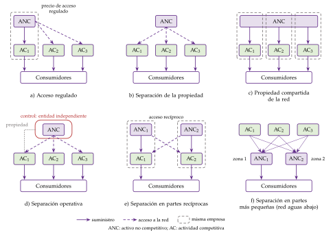
Fuente: elaboración propia a partir de OCDE (2001, 11-19, figs. 1-5).
Además de estas formas, la Unión Europea y España usan otras más débiles, que no bastan por sí solas para proteger la competencia: la separación contable (cuentas separadas por actividad), la funcional (divisiones distintas dentro de la empresa) y la jurídica (sociedades distintas del mismo grupo) (OCDE, 2001, 18; Armstrong, Cowan y Vickers, 1994) [ver tema 4.B.15].
En la práctica el regulador se topa siempre con 3 dificultades: fijar el canon de acceso, mantener los incentivos a invertir en la red y compensar a quien presta el servicio universal.
Con la liberalización, las obligaciones de servicio universal (llevar el servicio básico a todos a un precio asequible, aunque en algunas zonas no sea rentable) dejan de financiarse con subvenciones cruzadas dentro del monopolio y pasan a tener un coste explícito, que se reparte entre los operadores o se cubre con fondos públicos [ver tema 4.A.12].
Mercados de 2 lados
Una plataforma de 2 lados pone en contacto a 2 grupos de usuarios que se benefician de que el otro sea grande (compradores y vendedores, usuarios y anunciantes): hay efectos de red cruzados (Rochet y Tirole, 2003). El precio óptimo de cada lado descuenta el valor que sus usuarios dan al otro: puede ser nulo o negativo en el lado que más atrae al otro, sin que sea depredación (Armstrong, 2006) [ver tema 3.A.15].
Así, el margen de Lerner (1) de un solo lado dice poco del poder de la plataforma, y la plataforma es poco impugnable porque los efectos de red, los datos acumulados y las inversiones irrecuperables protegen su posición [ver tema 3.A.15]. Por eso la regulación mira sobre todo cómo da acceso, más que qué precios cobra.
III.4. Aplicaciones prácticas
La regulación real combina los instrumentos anteriores (tabla 5), y su evolución reciente reproduce la de la exposición: de la tasa de rentabilidad a los incentivos, y de regular los precios a regular el acceso. Los ejemplos de separación vertical (ADIF y Renfe, Aena, Exolum, las distribuidoras eléctricas) están en III.3.
Redes eléctricas y gasistas en España
Las redes españolas de electricidad y de gas, de transporte y de distribución, son actividades reguladas; su retribución la decide la CNMC mediante circulares:
tasa de rentabilidad: sobre el valor neto de los activos se aplica una tasa de retribución financiera, a la que se suma su amortización (Comisión Nacional de los Mercados y la Competencia, 2019); en la electricidad, el 6,58 % para 2026-2031, un punto por encima del 5,58 % de 2020-2025 (Comisión Nacional de los Mercados y la Competencia, 2025e, 2025d), y en el transporte y la regasificación de gas, el 6,46 % para 2027-2032 (Comisión Nacional de los Mercados y la Competencia, 2026d);
incentivos: la nueva metodología de la distribución eléctrica compara de forma conjunta la inversión y los gastos de operación (TOTEX) con unos costes de referencia (Comisión Nacional de los Mercados y la Competencia, 2025c).
Redes del Valle sería una de esas distribuidoras: cobra los peajes que fija la CNMC, recibe el 6,58 % sobre sus activos y se le compara con unos costes de referencia, como en el yardstick.
Lectura teórica: el sistema mezcla instrumentos. La tasa de rentabilidad asegura la inversión en redes; los incentivos y la comparación con costes de referencia suben la potencia del contrato y corrigen el sesgo de Averch y Johnson (II.1). La tasa es lo más discutido, porque decide cuánto va a la rentabilidad de las empresas y cuánto sale de la factura de los consumidores.
La excepción ibérica fue otro tipo de intervención. A partir del 14 de junio de 2022, España puso un tope al precio del gas que usan las centrales que marcan el precio de la electricidad: 40 euros por megavatio hora al principio, con una senda creciente después, y una prórroga que la mantuvo hasta el final de 2023 (Jefatura del Estado, 2022a, 2023; Ministerio para la Transición Ecológica y el Reto Demográfico, 2022). No atacaba el poder de mercado de ninguna empresa, sino el contagio del coste de la tecnología marginal al precio mayorista en plena crisis del gas; se hizo temporal y acotada para no dañar la credibilidad de la regulación ante los inversores (II.5).
El price cap en la práctica
Reino Unido: el tope de RPI\(-\)3 de British Telecom en 1984 se extendió a todos los servicios privatizados, y hoy el regulador de la energía aplica el modelo RIIO de ingresos máximos (II.4). El RIIO-3, para las redes de transporte entre abril de 2026 y marzo de 2031, reconoce a los fondos propios una rentabilidad real del 5,70 % en la electricidad y del 6,12 % en el gas (Ofgem, 2025b), y exige mejorar la eficiencia un 1 % al año, la \(X\) del modelo (Ofgem, 2025a).
Aena: el ingreso máximo por pasajero del DORA 2027-2031 pasa de 10,52 euros en 2026 a 10,69 en 2031, con una \(X\) del 0,33 % anual que se suma (II.4) (Dirección General de Aviación Civil, 2026).
Telecomunicaciones: una regulación del acceso que se retira
El Código Europeo de las Comunicaciones Electrónicas ordena una regulación ex ante en 3 pasos (Parlamento Europeo y Consejo de la Unión Europea, 2018; Jefatura del Estado, 2022b):
definir los mercados relevantes (I.2);
comprobar que cumplen a la vez 3 criterios: barreras de entrada elevadas y duraderas, ninguna tendencia hacia la competencia efectiva y un derecho de la competencia que no basta por sí solo;
exigir a quien tenga peso significativo en el mercado, el equivalente de la posición dominante, obligaciones de acceso, de no discriminación o de precios orientados a costes.
La Comisión solo recomienda hoy regular ex ante 2 mercados mayoristas, el acceso local en una ubicación fija y la capacidad dedicada (Comisión Europea, 2020).
En España, durante años la CNMC impuso a Telefónica ofrecer al por mayor el acceso a su fibra (los servicios NEBA). Desde octubre de 2021 esa obligación ya solo afectaba al 30 % de la población, y en agosto de 2025 se suprimió, con 6 meses de transición; sigue regulado el acceso a su infraestructura física, es decir, conductos, canalizaciones y postes (Comisión Nacional de los Mercados y la Competencia, 2025a).
Lectura teórica: se regula mientras hay un cuello de botella y se retira cuando la competencia en infraestructuras es sostenible.
Mercados digitales: de la defensa de la competencia a la regulación ex ante
Los efectos de red, los costes de cambiar de proveedor, las economías de escala y los datos hacen que las grandes plataformas sean poco impugnables, y la defensa de la competencia ex post ha resultado lenta. El Tribunal de Justicia de la UE confirmó en 2024 la multa de 2.424 millones de euros a Google por favorecer su comparador de compras (Tribunal de Justicia de la Unión Europea, 2024) y en 2026 la de 4.125 millones por las condiciones impuestas a los fabricantes de móviles Android (Tribunal de Justicia de la Unión Europea, 2026).
El Reglamento de Mercados Digitales (DMA), «sobre mercados disputables y equitativos en el sector digital» y aplicable desde mayo de 2023, lleva a las plataformas el enfoque ex ante de las industrias de red, aunque centrado en conductas y no en precios (Parlamento Europeo y Consejo de la Unión Europea, 2022):
designación con poca información: la Comisión no delimita mercados uno a uno, sino que nombra guardianes de acceso a las plataformas que rebasan ciertos umbrales cuantitativos;20 hoy son 7, Alphabet, Amazon, Apple, ByteDance, Meta y Microsoft, designados en 2023, y Booking, en 2024, con 23 servicios básicos de plataforma en total (Comisión Europea, 2026a);
obligaciones y prohibiciones directas: no favorecer sus propios servicios (la misma no discriminación que se exige a un incumbente integrado), dejar desinstalar aplicaciones y cambiar las predeterminadas, portabilidad de los datos, interoperabilidad gratuita de las funciones básicas de mensajería si otro proveedor la pide y libertad de los usuarios profesionales para llevar a sus clientes a ofertas fuera de la plataforma (Parlamento Europeo y Consejo de la Unión Europea, 2022);
sanciones: multas de hasta el 10 % de la facturación mundial, que suben al 20 % en caso de reincidencia (Parlamento Europeo y Consejo de la Unión Europea, 2022, art. 30). Apple (500 millones de euros) y Meta (200 millones) fueron las primeras empresas sancionadas por incumplimiento, en abril de 2025 (Comisión Europea, 2025); en julio de 2026, Google recibió 890 millones por dar ventaja a sus propios servicios en el buscador y por las restricciones de Google Play (Comisión Europea, 2026c).
Lectura teórica: designar por umbrales es una manera de regular sin conocer costes ni demandas, es decir, una salida al problema de la información asimétrica. Pero los límites de siempre siguen ahí: la plataforma conoce sus algoritmos mejor que nadie y tiene interés en moldear cómo se le aplican las obligaciones (II.5).
Recapitulación: con varias empresas, la comparación y la subasta sustituyen a la información que le falta al regulador, y el acceso a la red ordena la competencia en los servicios; la tabla 5 resume qué da y qué cuesta cada instrumento.
| Instrumento | Potencia \(b\) | ¿Empuja a abaratar? | Renta para la empresa | Qué tiene que saber el regulador | Qué puede salir mal |
|---|---|---|---|---|---|
| \(p=\mathrm{CMg}\) y subvención | 0 | no: las pérdidas se cubren | nula | costes y demanda | impuestos para pagar la subvención |
| \(p=\mathrm{CMe}\), dos partes, Ramsey-Boiteux | 0 | poco | nula | costes; elasticidades para Ramsey | clientes expulsados por la cuota fija; cargas mayores a los inelásticos |
| Tasa de rentabilidad | \(\approx 0\) | casi nada, salvo por el desfase | baja | beneficio contable y base de activos | exceso de capital |
| Menú de Laffont-Tirole | de baja a 1, según el tipo | sí, sobre todo la eficiente | informativa, solo la eficiente | distribución de los tipos y \(\psi(e)\) | falta de compromiso; captura |
| Price cap | 1 | al máximo | alta si el tope es holgado | precio inicial y \(X\) | menos calidad; trinquete; renegociación |
| Yardstick | 1 | al máximo | casi nula | costes de las demás | pacto entre las comparadas; entornos distintos |
| Subasta de la concesión | la del contrato subastado | sí, al pujar | menor cuantos más pujan | nada de costes; sí, calidad exigible | contratos incompletos; ventaja del titular al renovar |
Fuente: elaboración propia a partir de Laffont y Tirole (1993) y Armstrong y Sappington (2007).
Conclusión
Recapitulación: en conclusión,
el poder de mercado, la capacidad de fijar de forma duradera precios por encima del coste marginal, aleja al mercado del óptimo, y se mide (con el índice de Lerner o con las cuotas y el IHH) en un mercado relevante que se delimita con el test del monopolista hipotético (I);
con información completa, el regulador sabe qué hacer: \(p=\mathrm{CMg}\) con subvención o, si los fondos públicos cuestan, los segundos óptimos, de la tarifa en dos partes a Ramsey-Boiteux;
con información asimétrica, tiene que dejar una renta informativa a la empresa eficiente: la regulación óptima equilibra incentivos y rentas, y la tasa de rentabilidad y el price cap son los 2 extremos del menú de Laffont y Tirole; el compromiso y la captura deciden hacia cuál inclinarse (II);
con varias empresas, la comparación y la competencia por el mercado recortan esas rentas, y el acceso a la red ordena la competencia en los servicios (III).
Relevancia: descarbonizar la economía obliga a ampliar mucho las redes eléctricas, y el dinero para hacerlo solo aparecerá si las reglas son estables y creíbles; y en la economía digital los cuellos de botella ya no son cables, sino datos y plataformas.
Extensiones: la empresa pública como alternativa a regular una empresa privada, y las privatizaciones [ver tema 4.B.15]; la política de competencia de la Unión Europea y de España [ver tema 3.B.39] [ver tema 4.A.15]; la regulación de la energía, el transporte y las telecomunicaciones [ver tema 4.A.5] [ver tema 4.A.12]; la información asimétrica y el diseño de mecanismos [ver tema 3.A.13] [ver tema 3.A.14]; los demás fallos de mercado y los fallos del sector público [ver tema 3.A.23], la economía conductual aplicada a la regulación (Thaler y Sunstein, 2003), y los grupos de interés [ver tema 4.B.2].
Opinión: no hay un instrumento óptimo en general: depende de los costes, de lo que el regulador puede observar y del origen del poder de mercado. La defensa de la competencia basta frente a las conductas; frente a los monopolios naturales hace falta regulación con incentivos, y la potencia que conviene darles crece con la capacidad de compromiso y la independencia del regulador. Por eso importan tanto como las fórmulas las instituciones que las aplican. Lo resumió Alfred Kahn, que pasó de estudiar la regulación a liberalizar la aviación de Estados Unidos: la tarea central y permanente de legisladores y reguladores es «encontrar la mejor combinación posible de una regulación inevitablemente imperfecta y una competencia inevitablemente imperfecta» (Kahn, 1988, vols. I, xxxvii).
Idea final: quien tiene poder de mercado tiene la sartén por el mango, y además es el único que sabe lo que hay dentro. La regulación óptima no le quita la sartén al monopolista natural, que es quien mejor cocina, sino que le paga lo justo para que nos deje ver lo que hay dentro: esa es la renta informativa.
A. Anexo: derivaciones
A.1. Efecto Averch-Johnson
Sea \(I(z_K,z_L)=p\big(F(z_K,z_L)\big)\,F(z_K,z_L)\) el ingreso, con \(I_i=\mathrm{IMg}\cdot\mathrm{PMg}_i\). La restricción de rentabilidad es \(I-w_Lz_L\leq s\,z_K\). Con su multiplicador \(\mu\geq 0\), el problema penalizado es \[I-w_Kz_K-w_Lz_L-\mu\,\big[I-w_Lz_L-s\,z_K\big].\]
Condición de primer orden respecto a \(z_L\): \((1-\mu)\,I_L-(1-\mu)\,w_L=0\Rightarrow I_L=w_L\).
Condición de primer orden respecto a \(z_K\): \((1-\mu)\,I_K-w_K+\mu\,s=0\Rightarrow I_K=\dfrac{w_K-\mu s}{1-\mu}=w_K-\dfrac{\mu}{1-\mu}\,(s-w_K)\).
Signo del multiplicador: con la restricción activa y \(s>w_K\), \(0<\mu<1\) (Averch y Johnson, 1962); con \(\mu=0\) la restricción no aprieta.
Cociente: dividiendo las 2 condiciones, \[\frac{\mathrm{PMg}_L}{\mathrm{PMg}_K}=\frac{I_L}{I_K}=\frac{w_L}{w_K-\frac{\mu}{1-\mu}(s-w_K)}>\frac{w_L}{w_K}.\] Con \(s>w_K\) y \(0<\mu<1\), el denominador es menor que \(w_K\): la empresa usa capital hasta donde su productividad marginal es menor que la que exige el mínimo coste, como si el capital le costara \(w_K-\mu(s-w_K)/(1-\mu)<w_K\). Sobrecapitaliza (5).
Casos límite: si \(s\) supera la rentabilidad sin regular, la restricción no aprieta (\(\mu=0\)) y no hay efecto; si \(s=w_K\), el beneficio económico permitido es cero y no hay una combinación de factores determinada.∎
A.2. Baron-Myerson con 2 tipos
Restricciones. Si la empresa eficiente elige \((\overline{q},\overline{t})\), obtiene \(\overline{t}-\underline{\beta}\,\overline{q}=\overline{U}+\Delta\beta\,\overline{q}\): de ahí \(\mathrm{IC}_1\). Si la ineficiente elige \((\underline{q},\underline{t})\), obtiene \(\underline{t}-\overline{\beta}\,\underline{q}=\underline{U}-\Delta\beta\,\underline{q}\): de ahí \(\mathrm{IC}_2\). Sumando las 2, \(\Delta\beta\,(\underline{q}-\overline{q})\geq 0\): la eficiente produce al menos tanto como la ineficiente.
Restricciones activas. Como cada euro de renta resta \(1-\alpha>0\) de bienestar, el regulador deja la menor renta compatible: \(\overline{U}=0\) (\(\mathrm{PC}_2\)) y \(\underline{U}=\Delta\beta\,\overline{q}\) (\(\mathrm{IC}_1\)); \(\mathrm{PC}_1\) se cumple sola.
Problema reducido: \[\max_{\underline{q},\overline{q}}\ \nu\big[S(\underline{q})-\underline{\beta}\,\underline{q}\big]+(1-\nu)\big[S(\overline{q})-\overline{\beta}\,\overline{q}\big]-\nu\,(1-\alpha)\,\Delta\beta\,\overline{q}.\]
Condiciones de primer orden: \(S'(\underline{q})=p(\underline{q})=\underline{\beta}\), y \((1-\nu)\big[p(\overline{q})-\overline{\beta}\big]=\nu\,(1-\alpha)\,\Delta\beta\), que es (7). Subir la cantidad de la ineficiente añade eficiencia cuando ese es el tipo (probabilidad \(1-\nu\)), pero encarece en \(\Delta\beta\) por unidad la renta que se cede a la eficiente (probabilidad \(\nu\)). Las de segundo orden se cumplen porque \(S''=p'<0\).
Comprobación de \(\mathrm{IC}_2\): \(\overline{U}=0\geq\underline{U}-\Delta\beta\,\underline{q}=\Delta\beta\,(\overline{q}-\underline{q})\), porque \(\underline{q}>\overline{q}\).
Cierre: si \(p(0)\leq\overline{\beta}+(1-\alpha)\,\frac{\nu}{1-\nu}\,\Delta\beta\), lo óptimo es \(\overline{q}=0\): no contratar con la ineficiente para no dejar renta a la eficiente. En el ejemplo (\(p=100-q\), \(\underline{\beta}=20\), \(\overline{\beta}=40\), \(\alpha=0\)), si \(100\leq 40+20\,\nu/(1-\nu)\), es decir, si \(\nu\geq 3/4\).∎
A.3. Menú de contratos de Laffont y Tirole
Restricciones. Si la empresa eficiente elige el contrato de la ineficiente, tiene que llegar al coste \(\overline{C}=\overline{\beta}-\overline{e}\), para lo que le basta un esfuerzo \(\underline{\beta}-\overline{C}=\overline{e}-\Delta\beta\), y obtiene \(\overline{t}-\psi(\overline{e}-\Delta\beta)=\overline{U}+\psi(\overline{e})-\psi(\overline{e}-\Delta\beta)=\overline{U}+\Phi(\overline{e})\). De ahí \(\mathrm{IC}_1\): \(\underline{U}\geq\overline{U}+\Phi(\overline{e})\). Si la ineficiente imitara a la eficiente, necesitaría un esfuerzo \(\underline{e}+\Delta\beta\) y obtendría \(\underline{U}-\Phi(\underline{e}+\Delta\beta)\): \(\mathrm{IC}_2\) es \(\overline{U}\geq\underline{U}-\Phi(\underline{e}+\Delta\beta)\).
Restricciones activas. Como cada euro de renta cuesta \(\lambda>0\), \(\overline{U}=0\) (\(\mathrm{PC}_2\)) y \(\underline{U}=\Phi(\overline{e})\) (\(\mathrm{IC}_1\)).
Problema reducido. Sustituyendo y quitando las constantes (\(S\), \(\underline{\beta}\), \(\overline{\beta}\)), el regulador elige \(\underline{e}\) y \(\overline{e}\) para maximizar \[-\nu\,(1+\lambda)\big[\psi(\underline{e})-\underline{e}\big]-\nu\,\lambda\,\Phi(\overline{e})-(1-\nu)\,(1+\lambda)\big[\psi(\overline{e})-\overline{e}\big].\]
Condiciones de primer orden. Respecto a \(\underline{e}\): \(\nu\,(1+\lambda)\big[1-\psi'(\underline{e})\big]=0\), de donde \(\psi'(\underline{e})=1\). Respecto a \(\overline{e}\): \((1-\nu)\,(1+\lambda)\big[1-\psi'(\overline{e})\big]-\nu\,\lambda\,\Phi'(\overline{e})=0\), de donde \[\psi'(\overline{e})=1-\frac{\lambda}{1+\lambda}\cdot\frac{\nu}{1-\nu}\cdot\Phi'(\overline{e}),\] que es (9). Como \(\psi\) es convexa, \(\Phi'(e)=\psi'(e)-\psi'(e-\Delta\beta)>0\), así que \(\psi'(\overline{e})<1\) y \(\overline{e}<e^{*}\). La condición de segundo orden se cumple si \(\psi'''\geq 0\), que hace a \(\Phi\) convexa.
Comprobación de \(\mathrm{IC}_2\): como \(\underline{e}=e^{*}>\overline{e}\), \(\underline{e}+\Delta\beta>\overline{e}\) y, al ser \(\Phi\) creciente, \(\underline{U}-\Phi(\underline{e}+\Delta\beta)=\Phi(\overline{e})-\Phi(\underline{e}+\Delta\beta)<0=\overline{U}\): la ineficiente no quiere el contrato de la eficiente.∎
Coste proporcional a la producción: con \(C=(\beta-e)\,q\), el esfuerzo ahorra \(q\) por unidad y la condición de información completa es \(\psi'(e^{*})=q\) (Laffont y Tirole, 1993, cap. 2); con un proyecto de tamaño dado, como aquí, \(\psi'(e^{*})=1\).
Por qué un contrato de potencia \(b\) induce \(\psi'(e)=b\): con \(t(C)=a-b\,(C-C^a)\) y \(C=\beta-e\), la empresa maximiza \(a-b\,(\beta-e-C^a)-\psi(e)\), y la condición de primer orden es \(\psi'(e)=b\). Con \(b=1\) se esfuerza como en el óptimo; con \(b\to0\), nada.∎
Ejemplo (\(\psi(e)=e^2/40\), \(\underline{\beta}=100\), \(\overline{\beta}=110\), \(\nu=\tfrac12\), \(\lambda=0{,}25\)): \(\psi'(e)=e/20\); \(\Phi(e)=\big[e^2-(e-10)^2\big]/40=e/2-2{,}5\) y \(\Phi'=\tfrac12\); \(\psi'(\overline{e})=1-0{,}2\cdot 1\cdot\tfrac12=0{,}9\), así que \(\overline{e}=18\); \(\underline{U}=\Phi(18)=6{,}5\); \(\overline{t}=\psi(18)=8{,}1\) y \(\underline{t}=\psi(20)+6{,}5=16{,}5\). El bienestar esperado, sin \(S\), es \(-1{,}25\cdot 95{,}05-0{,}25\cdot 0{,}5\cdot 6{,}5=-119{,}625\), frente a \(-119{,}6875\) si se pidiera \(\overline{e}=20\) con una renta de \(\Phi(20)=7{,}5\) (tabla 4).
A.4. Competencia por comparación
La empresa \(i\) obtiene \(\Pi_i=(p_i-c_i)\,q(p_i)+T_i-R(c_i)\), con \(p_i=\bar{c}_{-i}\) y \(T_i=\bar{R}_{-i}\) (12), que no dependen de su \(c_i\). Derivando respecto a \(c_i\), la condición de primer orden es \(-q(\bar{c}_{-i})-R'(c_i)=0\), y la de segundo orden, \(-R''(c_i)<0\), se cumple si reducir costes es cada vez más caro (\(R''>0\)).
Equilibrio simétrico: si todas eligen \(c^{*}\), entonces \(\bar{c}_{-i}=c^{*}\) y \(-R'(c^{*})=q(c^{*})\). Es la misma condición que elegiría un planificador que maximiza \(\int_{c}^{\infty}q(x)\,dx-R(c)\), el excedente de los consumidores con \(p=c\) menos el gasto en reducir costes: el coste es el eficiente. Además, \(p_i=c^{*}\) y \(T_i=R(c^{*})\), así que \(\Pi_i=0\): no hay rentas.
Con los precios dados, \(c^{*}\) es la mejor respuesta de cada empresa: es un equilibrio de Nash [ver tema 3.A.14].∎
A.5. Precio de acceso a la red
Notación: \(p\), precio del servicio final del incumbente; \(c_a\), su coste por unidad de acceso; \(c_I\), su coste propio por el resto del servicio; \(c_E\), el coste propio del entrante, y \(A\), el peaje que este paga por unidad de acceso.
Regla del precio eficiente de los componentes: \(A\) tiene que cubrir 2 cosas, lo que cuesta dar el acceso y el margen al que renuncia el incumbente por cada cliente que pasa al entrante (su coste de oportunidad): \(A=c_a+(p-c_a-c_I)=p-c_I\) (13). Al entrante le compensa si \(A+c_E\leq p\), es decir, si \(c_E\leq c_I\).
Sustitución imperfecta: si cada unidad que vende el entrante le quita al incumbente solo \(d\leq 1\) unidades (el ratio de desvío), el coste de oportunidad se multiplica por \(d\): \(A=c_a+d\,(p-c_a-c_I)\) (Armstrong, Doyle y Vickers, 1996). La regla simple es el caso \(d=1\).
Fondos públicos costosos: si el incumbente tiene que cubrir sus costes, el precio de acceso óptimo añade al coste de oportunidad un recargo de tipo Ramsey, mayor cuanto menos elástica es la demanda de acceso (Armstrong, Doyle y Vickers, 1996).
Limitación: la regla toma \(p\) como dado; si \(p\) es de monopolio, el margen de monopolio pasa al precio de acceso. Por eso solo es óptima con el precio final regulado.∎
B. Anexo: el mercado relevante en la práctica
B.1. Pérdida crítica y falacia del celofán
Sea \(\mathcal{L}=(p-c)/p\) el margen relativo inicial, con \(c\) el coste marginal (constante), y \(\tau\) la subida relativa del precio que se contrasta. Si con la subida se pierde una fracción \(\ell\) de las ventas, el beneficio no cambia cuando \[\big[p\,(1+\tau)-c\big]\,q\,(1-\ell)=(p-c)\,q\ \Longleftrightarrow\ (\mathcal{L}+\tau)(1-\ell)=\mathcal{L}\ \Longleftrightarrow\ \ell=\ell^{c}\equiv\frac{\tau}{\tau+\mathcal{L}}.\] Es la pérdida crítica (Harris y Simons, 1989): si la pérdida real es menor, la subida es rentable y el mercado candidato es el relevante.
Con \(\tau=5\) %: si \(\mathcal{L}=20\) %, la pérdida crítica es del 20 %; si \(\mathcal{L}=50\) %, de algo menos del 10 %. Cuanto mayor es el margen, menos ventas basta perder para que la subida no compense.
Pérdida real aproximada: con una elasticidad \(|\varepsilon_{q,p}|\) de la demanda del conjunto candidato, se pierde en torno a \(\ell\approx|\varepsilon_{q,p}|\,\tau\), y el test sale rentable si \(|\varepsilon_{q,p}|<1/(\tau+\mathcal{L})\).
Falacia del celofán: si el precio ya es el del monopolista, \(\mathcal{L}=1/|\varepsilon_{q,p}|\) (1), y la condición pasa a ser \(|\varepsilon_{q,p}|\,\tau+1<1\), que no se cumple con ninguna \(\tau>0\): a precios de monopolio, ninguna subida adicional es rentable y el mercado sale más amplio de lo que es (Comisión Europea, 2024, n. 55).∎
B.2. Herramientas
Elasticidades y ratios de desvío: el ratio de desvío del producto \(i\) al \(j\) es la parte de las ventas que pierde \(i\) al subir su precio que se lleva \(j\), \(-\,(\partial q_j/\partial p_i)/(\partial q_i/\partial p_i)\); cuanto mayor, más cercanos son.
Correlación de precios: los productos del mismo mercado sufren perturbaciones parecidas y sus precios se mueven juntos (Stigler y Sherwin, 1985). Es, como mucho, una condición necesaria: 2 distribuidoras eléctricas de países distintos tienen precios correlacionados porque lo están sus costes, y no compiten.
Flujos de comercio para el mercado geográfico (Elzinga y Hogarty, 1973): una zona es un mercado si casi nada de lo que se consume en ella viene de fuera y casi nada de lo que se produce en ella sale.
Pruebas cualitativas: las características, los usos y la evolución de los precios del producto; las encuestas a clientes y competidores; los costes de cambiar de proveedor; y la sustitución por la oferta (si otras empresas pueden pasar a fabricar el producto en poco tiempo y sin grandes costes).
Mercados geográficos: pueden ser locales (estaciones de servicio, hospitales), nacionales (por la regulación, la lengua o los costes de transporte), europeos o mundiales (aviones comerciales).
B.3. Usos de la definición
Acuerdos (art. 101 del TFUE): los de menor importancia no restringen la competencia de forma sensible si las cuotas no superan el 10 % entre competidores o el 15 % entre no competidores (Comisión Europea, 2014, puntos 8-9); los verticales quedan exentos por categorías hasta el 30 % (Comisión Europea, 2022, art. 3).
Abuso (art. 102): cuota del 50 % o más como presunción de dominancia (Tribunal de Justicia de las Comunidades Europeas, 1991); por debajo del 40 %, en general improbable (Comisión Europea, 2026d, punto 24).
Concentraciones: cuotas e IHH antes y después (Consejo de la Unión Europea, 2004; Comisión Europea, 2004).
Regulación ex ante de las telecomunicaciones: la Comisión recomienda 2 mercados mayoristas para el análisis de los reguladores nacionales, el de acceso local en una ubicación fija y el de capacidad dedicada (Comisión Europea, 2020); el regulador puede añadir otros si cumplen los 3 criterios (III.4).
C. Anexo: teoría positiva, el modelo de Peltzman
Planteamiento. El regulador elige el precio \(p\) para maximizar su apoyo político \(\mathcal{A}\big(p,B(p)\big)\), con \(\partial\mathcal{A}/\partial p<0\) (los consumidores le retiran apoyo cuando sube el precio) y \(\partial\mathcal{A}/\partial B>0\) (la industria se lo da cuando gana más) (Peltzman, 1976). El beneficio de la industria, \(B(p)\), es nulo con el precio competitivo, \(p^c\), y máximo con el de monopolio, \(p^M\).
Gráficamente (gráfico 11), en el plano \((p,B)\), las curvas de iso-apoyo son crecientes: un precio más alto solo deja igual al regulador si la industria gana más. Su pendiente es la relación marginal de sustitución política, \(\left.dB/dp\right|_{\mathcal{A}}=-(\partial\mathcal{A}/\partial p)/(\partial\mathcal{A}/\partial B)>0\), y el apoyo crece hacia arriba y a la izquierda.
Óptimo: la tangencia entre la curva de beneficios y la curva de iso-apoyo más alta, \[B'(p^{*})=-\frac{\partial\mathcal{A}/\partial p}{\partial\mathcal{A}/\partial B}>0,\] que es la condición de primer orden del cuerpo (II.5). Como \(B'(p^{*})>0\), el precio está en el tramo creciente del beneficio: \(p^c<p^{*}<p^M\). El regulador no entrega todo a la industria (la teoría de la captura pura de Stigler) ni todo a los consumidores (la teoría normativa): reparte.
Implicación: la regulación es más probable en las industrias más competitivas o más monopolísticas, donde uno de los 2 grupos tiene más que ganar con ella (Peltzman, 1976).∎
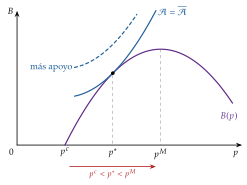
Fuente: elaboración propia a partir de Peltzman (1976).
D. Anexo: la regulación en la economía del bienestar
Este anexo recoge lo que, en el temario anterior, acompañaba a la teoría de la regulación: por qué se regula desde la economía del bienestar, los fallos de mercado distintos del poder de mercado y los fallos del sector público. Su tema de referencia es otro [ver tema 3.A.22] [ver tema 3.A.23] [ver tema 3.A.13]: aquí solo se resume, con lo que allí no está.
D.1. De la economía del bienestar a la regulación
Alfred Marshall definió la economía como el estudio de la humanidad en los asuntos ordinarios de la vida (Marshall, 1890). Detrás está el individualismo metodológico: la teoría ve la economía como individuos que se relacionan en mercados descentralizados.21 La microeconomía estudia a consumidores y productores;22 desde un punto de vista positivo, el equilibrio de mercado, y desde uno normativo, si ese equilibrio es deseable, que es el terreno de la economía del bienestar.23
Sus funciones son 2: dar instrumentos para valorar los estados sociales (lo que exige juicios de valor explícitos) y dar normas de política económica para alcanzar el más preferido.24
Todos los economistas que han opinado sobre el bienestar social han sido, en cierto modo, economistas del bienestar: los mercantilistas lo asociaban a los metales preciosos; Adam Smith, a la producción total; Jeremy Bentham, a la suma de las utilidades; los marginalistas (Jevons, Menger, Walras), con utilidades cardinales y utilidad marginal decreciente, a un reparto igualitario. Marshall es el primer economista del bienestar propiamente dicho, con el excedente del consumidor, medido en dinero.
Vilfredo Pareto, sucesor de Walras en Lausana, rechaza la utilidad cardinal25 y propone en su Manuale di economia politica (Pareto, 1906) un criterio que se ha impuesto porque exige pocos juicios de valor:26 un estado es eficiente si nadie puede mejorar sin que otro empeore. Es ordinal, se basa en juicios de valor débiles y generalmente aceptados, y permite valorar el mercado competitivo.
Los 2 teoremas fundamentales de la economía del bienestar, intuidos por Abba Lerner y demostrados por Kenneth Arrow y Gérard Debreu [ver tema 3.A.22], abren las 2 puertas a la intervención:
el primero (1TFEB): el equilibrio competitivo es eficiente en el sentido de Pareto, pero solo con unos supuestos muy exigentes; cuando fallan hay fallos de mercado y cabe intervenir por eficiencia;
el segundo (2TFEB): cualquier asignación eficiente se puede alcanzar como equilibrio competitivo redistribuyendo las dotaciones iniciales; como hay infinitos óptimos de Pareto que no se pueden ordenar entre sí, cabe intervenir por equidad [ver tema 3.A.24].
La teoría de la regulación estudia los mecanismos de intervención del sector público en una economía de mercado; ha ido de la teoría tradicional, con un regulador benevolente e informado (bloque I), a las que estudian sus límites de información (bloque II) y de incentivos (II.5).
D.2. Los demás fallos de mercado
Externalidades [ver tema 3.A.23]: la producción o el consumo de un agente afecta a la utilidad o al beneficio de otro sin pasar por los precios (Stiglitz, 2000, caps. 4 y 5). El mercado produce de más lo que causa externalidades negativas (la contaminación) y de menos lo que causa positivas (la I+D+i). Se corrigen con impuestos y subvenciones pigouvianos,27 con estándares que fijan la cantidad (Weitzman, 1974), con la negociación de Coase (1960)28 y con los mercados de derechos (cap and trade), como el régimen de comercio de derechos de emisión de la Unión Europea (Energía y Sociedad, 2022).
Bienes públicos y comunes [ver tema 3.A.23]: según la rivalidad y la exclusión, los bienes son privados, de club, comunes o públicos puros (V. Ostrom y Ostrom, 1977; Sahuquillo, 2017).29 El bien público puro se provee de menos porque cada uno oculta su valoración (el polizón), y su solución es más financiera (provisión pública) que regulatoria.
La forma de decidir importa: Olken (2010) asignó al azar a 49 aldeas indonesias la forma de elegir sus proyectos (carreteras y puentes, regadío, agua potable), y donde se decidió por plebiscito los vecinos quedaron más satisfechos y más dispuestos a contribuir.
Y la economía de la felicidad sirve para valorarlos: con encuestas de felicidad, renta y bien público, la renta a la que se renunciaría por una unidad más del bien manteniendo la felicidad constante es su valor (Levinson, 2009, 2012).
La regulación sí importa en los recursos comunes, sobreexplotados (la tragedia de los comunes de Hardin (1968)), que Elinor E. Ostrom (1990), Nobel en 2009 (The Nobel Prize, 2009), mostró que las comunidades pueden gobernar con reglas propias.30
Información asimétrica [ver tema 3.A.13]: no todos saben lo mismo. Con selección adversa (información oculta antes del contrato), los de mejor calidad o menor riesgo se retiran y el mercado se encoge o desaparece, como en el mercado de coches usados de Akerlof (1970); con riesgo moral (acción oculta después del contrato), quien está asegurado se cuida menos y el seguro se encarece o se raciona. El sector público interviene con seguros obligatorios (el de responsabilidad civil del automóvil), con producción pública (la sanidad universal; el crédito del ICO a quien la banca excluye) y con normas sobre publicidad, licencias, garantías, auditorías y marcas.31
D.3. Los fallos del sector público
A los fallos de mercado se oponen los del sector público, que se estudian con detalle en otro tema [ver tema 3.A.23] [ver tema 4.B.2]: los de información (de la discusión entre Mises, Lange y Hayek (1945) sobre el cálculo socialista al diseño de mecanismos de Hurwicz)32 y los de incentivos de la elección pública de Buchanan, Nobel en 1986 (The Nobel Prize, 1986), y Tullock: votantes racionalmente ignorantes, políticos que buscan la reelección, burócratas que maximizan su presupuesto y grupos de presión que buscan rentas.
Lo que aquí se añade:
el ciclo político de Nordhaus (1975), con un precedente en Kalecki (1943): con votantes miopes, que solo miran los resultados recientes, al gobierno le conviene expandir la economía antes de las elecciones, bajando el paro a costa de más inflación, y ajustar bruscamente después; el paro y la inflación dibujan dientes de sierra que se repiten en cada legislatura (gráfico 12). Las soluciones: legislaturas más largas, límites de mandatos y bancos centrales independientes.
Gráfico 12.– Ciclo político: la inflación y el paro entre elecciones 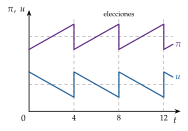
Fuente: elaboración propia a partir de Nordhaus (1975).
de la burocracia vocacional de Weber (1922) al burócrata que maximiza su presupuesto de Niskanen (1971);33 y, además de no poder cobrar según su productividad, los burócratas tienden, según Atkinson y Stiglitz (1980, lección 10, 259-263), a la aversión al riesgo, que frena la innovación y aumenta la resistencia al cambio (Mueller, 2003, § 16.4.2, p. 370);
el Leviatán34 de Brennan y Buchanan (1980): un Estado que crece por los intereses de sus unidades y no por el bienestar social;
la ilusión fiscal (Puviani, 1903; Buchanan y Wagner, 1977): los votantes infravaloran los impuestos retenidos en origen, los indirectos,35 los de un sistema poco transparente y los aplazados mediante deuda.36
Las soluciones (ligar la retribución a la productividad,37 mejorar el control, separar el diseño de la ejecución, presupuestar en base cero, producción privada con provisión pública, reglas fiscales) están en el mismo tema [ver tema 3.A.23]. Con unos y otros fallos, estamos en el terreno del second best [ver tema 3.A.22].
Para ampliar: el experimento de las aldeas indonesias, en el repositorio del MIT (Olken, 2010); la columna de Levinson (2009) en VoxEU sobre la valoración de los bienes públicos con encuestas de felicidad; el faro y las boyas como bien público, en un vídeo de la Universidad Francisco Marroquín (Universidad Francisco Marroquín, s. f.); el cap and trade en el manual de Energía y Sociedad (Energía y Sociedad, 2022); y la ilusión fiscal y el coste de lo gratis, en Katalepsis (2015).
D.4. Mecanismos cuasi-competitivos y de mercado
Entre regular y dejar hacer al mercado caben mecanismos que introducen competencia o precios dentro de la actividad pública:
la contratación externa: el sector público sigue proveyendo y pagando el servicio, pero lo produce una empresa elegida por concurso (III.2) [ver tema 4.B.15];
la concesión de derechos de propiedad, como las cuotas de pesca o los derechos de emisión negociables, que crean un mercado donde no lo había [ver tema 3.A.23];
la competencia entre unidades públicas (mercados internos), como los hospitales que compiten por los pacientes o se comparan entre sí (III.1);
los vales o cheques, que financian al usuario y no al productor, para que elija entre proveedores;
el copago (precios públicos y tasas), que hace pagar una parte del coste a quien usa el servicio y modera la demanda.
D.5. ¿Qué es una buena regulación? Los 5 criterios de Baldwin, Cave y Lodge
Sería tentador decir que una regulación es buena si es eficiente, si maximiza la riqueza. Pero la maximización de la riqueza no da una base ética a la acción ni justifica un reparto concreto de derechos, de modo que no sirve para juzgar las decisiones que afectan a los derechos (Baldwin, Cave y Lodge, 2012, cap. 3, 25–39).38
La eficiencia cuenta, pero lo razonable es juzgar la legitimidad de la regulación, si merece apoyo, con 5 preguntas:
Mandato legislativo: ¿la respalda el Parlamento y cumple lo que este encargó? Pero los mandatos suelen ser vagos, con objetivos que chocan entre sí, y los legisladores prefieren a veces no precisarlos para dejar margen al regulador.
Rendición de cuentas: ¿responde el regulador ante instituciones democráticas? Pero hay que decidir cuánta y a qué coste, y puede chocar con la eficacia.
Procedimientos justos, accesibles y abiertos: ¿puede participar el público? Pero más participación puede hacer más lentas las decisiones.
Experiencia: ¿actúa con conocimiento suficiente? Pero el público no puede juzgar la pericia del regulador, que además tiene difícil explicar sus decisiones de forma sencilla, y eso alimenta la desconfianza.
Eficiencia: ¿cumple el mandato al menor coste y con resultados eficientes? Pero la eficiencia es difícil de medir.
E. Anexo: marco normativo e instituciones de la regulación
E.1. Instituciones regulatorias
Los Estados combinan varios instrumentos:
la legislación, que regula directamente, pero choca con la falta de conocimientos técnicos de los legisladores, su vulnerabilidad ante los grupos organizados y el peso del corto plazo;
los contratos de concesión, que venden a una empresa el derecho a explotar el monopolio durante un tiempo (III.2);
las comisiones reguladoras independientes, con pocos miembros que deciden con el apoyo de equipos técnicos; más independencia de los poderes ejecutivo y legislativo suele asociarse a mejores resultados, porque protege el compromiso (II.5);
la provisión directa por una empresa pública, habitual en Europa antes de las privatizaciones de los años 80 y 90 [ver tema 4.B.15].
En España, desde la Ley 3/2013 un solo organismo, la CNMC, vela por la competencia en toda la economía y supervisa a la vez los sectores regulados: energía, telecomunicaciones y audiovisual, ferrocarril y aeropuertos, y correos (Jefatura del Estado, 2013a).
En la Unión Europea, la Comisión aplica los arts. 101 y 102 del TFUE y el control de las concentraciones (Unión Europea, 2016; Consejo de la Unión Europea, 2004), y desde 2023 designa y supervisa a los guardianes de acceso de la DMA (Parlamento Europeo y Consejo de la Unión Europea, 2022).
En el Reino Unido, cada sector tiene su regulador independiente; el de la energía, Ofgem, fija los ingresos de las redes con el modelo RIIO (Ofgem, 2025a).
E.2. Normas de referencia
Unión Europea:
Tratado de Funcionamiento de la Unión Europea, arts. 101 (acuerdos), 102 (abuso de posición dominante), 106 (empresas públicas y servicios de interés económico general) y 107-109 (ayudas de Estado) (Unión Europea, 2016);
Reglamento (CE) 139/2004, de control de las concentraciones (Consejo de la Unión Europea, 2004), y las Directrices sobre concentraciones horizontales de 2004, en revisión (Comisión Europea, 2004, 2026b);
Reglamento (UE) 2022/720, de exención por categorías de los acuerdos verticales (Comisión Europea, 2022), y Comunicación de minimis de 2014 (Comisión Europea, 2014);
Comunicación de 2024 sobre la definición del mercado de referencia (Comisión Europea, 2024) y Directrices de 2026 sobre los abusos excluyentes, que sustituyen a las Orientaciones de 2009 (Comisión Europea, 2026d);
Reglamento (UE) 2022/1925, de Mercados Digitales (Parlamento Europeo y Consejo de la Unión Europea, 2022);
Directiva (UE) 2018/1972, Código Europeo de las Comunicaciones Electrónicas (Parlamento Europeo y Consejo de la Unión Europea, 2018), y Recomendación (UE) 2020/2245 sobre los mercados pertinentes (Comisión Europea, 2020);
Directiva 2012/34/UE, del espacio ferroviario europeo único (cánones) (Parlamento Europeo y Consejo de la Unión Europea, 2012).
España:
Ley 15/2007, de Defensa de la Competencia (Jefatura del Estado, 2007), y Ley 3/2013, de creación de la CNMC (Jefatura del Estado, 2013a) [ver tema 4.A.15];
Ley 24/2013, del Sector Eléctrico: actividades reguladas, separación de actividades y acceso de terceros a las redes (Jefatura del Estado, 2013b);
Ley 54/1997, del Sector Eléctrico (costes de transición a la competencia) (Jefatura del Estado, 1997), suprimidos por el Real Decreto-ley 7/2006 (Jefatura del Estado, 2006);
Ley 34/1998, del sector de hidrocarburos (acceso de terceros a oleoductos y almacenamientos, art. 41) (Jefatura del Estado, 1998), y Real Decreto-ley 6/2000 (límites al accionariado de CLH, hoy Exolum) (Jefatura del Estado, 2000);
Ley 39/2003, del Sector Ferroviario (separación de ADIF y Renfe Operadora) (Jefatura del Estado, 2003), sustituida por la Ley 38/2015, del Sector Ferroviario (Jefatura del Estado, 2015b), y Ley 11/2022, General de Telecomunicaciones (Jefatura del Estado, 2022b);
DORA 2027-2031 de Aena (Dirección General de Aviación Civil, 2026);
circulares de la CNMC: 2/2019 (tasa de retribución financiera) (Comisión Nacional de los Mercados y la Competencia, 2019) y su reforma, la 9/2025 (Comisión Nacional de los Mercados y la Competencia, 2025e); 8/2025, de la retribución de la distribución eléctrica (Comisión Nacional de los Mercados y la Competencia, 2025c); 3/2020, de los peajes eléctricos (Comisión Nacional de los Mercados y la Competencia, 2020); 5/2026, de la tasa de retribución del gas (Comisión Nacional de los Mercados y la Competencia, 2026d);
Ley 2/2015, de desindexación de la economía española (Jefatura del Estado, 2015a), y Real Decreto 55/2017 (Ministerio de Hacienda y Función Pública, 2017).
Estados Unidos: leyes Sherman (1890) y Clayton (1914); directrices de concentraciones de 1982 y 2023 (U.S. Department of Justice, 1982; U.S. Department of Justice y Federal Trade Commission, 2023) [ver tema 3.A.15].
F. Anexo: qué estudia cada tema del bloque
Competencia perfecta en un mercado [ver tema 3.A.16]: equilibrio parcial, plazos y bienestar medido con excedentes; la lista común de supuestos de las estructuras de mercado.
Este tema: el poder de mercado y su regulación óptima, también con información asimétrica, y la teoría positiva de la regulación (captura).
Equilibrio general [ver tema 3.A.21]: la competencia perfecta en todos los mercados a la vez: excesos de demanda, ley de Walras, existencia, unicidad y estabilidad.
Teoremas del bienestar [ver tema 3.A.22]: el óptimo de Pareto, los 2 teoremas fundamentales con todos sus supuestos y su demostración, y el second best.
Fallos de mercado [ver tema 3.A.23]: las externalidades y los bienes públicos, cómo puede intervenir el sector público y los fallos del propio sector público.
Funciones de bienestar social y elección colectiva [ver tema 3.A.24]: cómo elegir entre los óptimos y cómo decide la sociedad (votación, teorema de Arrow).
Cambio climático [ver tema 3.B.31]: la mayor externalidad global y los acuerdos y medidas para hacerle frente.
En el cuarto ejercicio, los mecanismos de decisión del sector público y la burocracia [ver tema 4.B.2], la evaluación de políticas [ver tema 4.B.6], la imposición indirecta y la fiscalidad verde [ver tema 4.B.13], el federalismo fiscal [ver tema 4.B.14] y la empresa pública [ver tema 4.B.15].
G. Anexo: aspectos para el test y preguntas del tribunal
Preguntas tipo test del primer ejercicio: simulador de test.
Lo que se suele preguntar en el test
Índice de Lerner: \(\mathcal{L}=(p-\mathrm{CMg})/p=1/|\varepsilon_{q,p}|\) en el óptimo del monopolista; entre 0 y 1; el monopolista opera en el tramo elástico (\(|\varepsilon_{q,p}|>1\)).
IHH: \(\sum_i(100\,s_i)^2\), de 0 a 10.000; con \(n\) empresas iguales, \(10.000/n\). Monopolio: 10.000.
SSNIP: subida del 5 al 10 %, «pequeña pero significativa y no transitoria»; el mercado relevante es el menor conjunto en el que la subida es rentable. Pérdida crítica: \(\ell^{c}=\tau/(\tau+\mathcal{L})\). Celofán: con precios ya de monopolio, el mercado sale demasiado amplio. SSNDQ: la variante con la calidad, para productos de precio cero.
Umbrales: 50 % presunción de dominancia (Tribunal de Justicia de las Comunidades Europeas, 1991); por debajo del 40 %, dominancia improbable (Comisión Europea, 2026d, punto 24); 30 % acuerdos verticales (Comisión Europea, 2022); 10 y 15 % de minimis (Comisión Europea, 2014).
Ramsey-Boiteux: el margen crece con \(\lambda\); con \(\lambda=0\), \(p=\mathrm{CMg}\); con \(\lambda\to\infty\), monopolio.
Averch-Johnson: sobrecapitalización con \(s>w_K\); \(\mathrm{RMST}_{LK}>w_L/w_K\); \(0<\mu<1\).
Baron-Myerson: no hay distorsión arriba; la ineficiente produce menos y sin renta; la eficiente se queda \(\Delta\beta\,\overline{q}\).
Laffont-Tirole: \(\psi'(\underline{e})=1\), \(\psi'(\overline{e})<1\); renta \(\Phi(\overline{e})=\psi(\overline{e})-\psi(\overline{e}-\Delta\beta)\); \(b=1\) precio fijo (para la eficiente), \(b\to0\) coste incrementado; dilema incentivos frente a extracción de rentas.
Price cap: \(p_{t+1}\leq p_t(1+\mathrm{IPC}_t-X)\); contrato de alta potencia; Littlechild (1983), British Telecom, RPI\(-\)3 en 1984. Trampa: en el DORA de Aena la \(X\) (+0,33 %) se suma.
Yardstick: \(p_i=\bar{c}_{-i}\); incentivos de precio fijo; riesgo de colusión.
ECPR: \(A=p-c_I\); solo entran rivales al menos tan eficientes. Leída como techo, \(A\leq p-c_I\), es la prueba del estrechamiento de márgenes.
Peltzman: \(p^c<p^{*}<p^M\).
DMA: Reglamento (UE) 2022/1925, aplicable desde mayo de 2023, con multas de hasta el 10 % (el 20 % si reincide) (Parlamento Europeo y Consejo de la Unión Europea, 2022); 7 guardianes de acceso y 23 servicios básicos (Comisión Europea, 2026a).
Fechas: Hobbes (1651), Dupuit (1844), Hotelling (1938), Coase (1946), Harberger (1954), Bernstein (1955), Boiteux (1956), Musgrave (1959), Averch y Johnson (1962), Leibenstein (1966), Demsetz (1968), Stigler (1971), Posner (1974), Peltzman (1976), Williamson (1976), Loeb y Magat (1979), Weitzman (1980), Baron y Myerson (1982), directrices de Estados Unidos (1982), Littlechild (1983), Becker (1983), Shleifer (1985), Laffont y Tirole (1986, 1987, 1991, 1993), Kahn (1988, reedición), Armstrong, Doyle y Vickers (1996), OCDE sobre la separación estructural (2001), Rochet y Tirole (2003), Nobel de Tirole (2014), Comunicación de la Comisión (2024).
Trampas: Weitzman tiene 2 trabajos en el temario: Prices vs. Quantities (1974), sobre externalidades, y el efecto trinquete (1980). The Logic of Collective Action de Olson es de 1965. La regla de Ramsey-Boiteux junta a Ramsey (1927) y Boiteux (1956). La propiedad compartida es del activo no competitivo. La teoría de los mercados impugnables viene de la organización industrial (Baumol, Panzar y Willig, 1982), no de la nueva economía de la regulación.
Preguntas probables del tribunal
¿Por qué el índice de Lerner no basta para medir el poder de mercado? ¿Y la cuota?
¿Qué es la falacia del celofán y cómo se evita?
¿Qué diferencia hay entre la defensa de la competencia y la regulación? ¿Cuándo se usa cada una?
¿Por qué el regulador no fija sin más \(p=\mathrm{CMg}\) en un monopolio natural?
¿Qué es el efecto Averch-Johnson? ¿Lo ve en la retribución de las redes españolas?
¿Qué es la renta informativa y por qué el regulador acepta distorsionar al tipo ineficiente?
En el modelo de Laffont y Tirole, ¿qué contrato elige la empresa eficiente y por qué?
¿Por qué el price cap da incentivos a reducir costes? ¿Qué problemas tiene? ¿Es el DORA de Aena un price cap?
¿Qué supuestos necesita la competencia por comparación? ¿Qué riesgo tiene?
¿Por qué, con riesgo de captura, conviene un contrato de baja potencia?
¿Por qué la DMA designa a los guardianes con umbrales en lugar de definir mercados?
¿Qué fallos de mercado hay en el mercado del alquiler de vivienda? (información asimétrica entre caseros e inquilinos, poder de mercado local, externalidades de barrio; [ver tema 3.A.13] [ver tema 3.A.23]).
¿Ha oído hablar del paternalismo libertario? Es diseñar las opciones para ayudar a decidir mejor sin quitar libertad de elección (Thaler y Sunstein, 2003).
¿Qué son los sistemas de opt-in y opt-out? En los primeros hay que pedir entrar; en los segundos se entra por defecto y hay que pedir salir. Por la inercia, la opción por defecto decide mucho, como muestran la donación de órganos (Johnson y Goldstein, 2003) y los planes de pensiones (Madrian y Shea, 2001): es la base del paternalismo libertario.
¿Qué es la captura del regulador y cómo se evita?
¿Qué relación hay entre la regulación y las nuevas tecnologías? (plataformas, datos, DMA).
¿Cómo se evalúa una regulación? (análisis coste-beneficio e impacto normativo; los 5 criterios de legitimidad del anexo D.5) [ver tema 4.B.6].
¿Por qué el dueño de una red integrado tiene incentivos a discriminar? ¿Qué formas de separación conoce y qué ejemplo español tiene cada una?
Bibliografía
Jean-Jacques Laffont, con quien Tirole construyó buena parte de esta teoría, murió en 2004 (Toulouse School of Economics, 2024), y el Nobel no se concede a título póstumo.↩︎
Las directrices de concentraciones de Estados Unidos de 2023 presumen que una concentración reduce sustancialmente la competencia si deja un IHH mayor que 1.800 con un aumento mayor que 100 (U.S. Department of Justice y Federal Trade Commission, 2023). Las directrices europeas de 2004 están en revisión: el borrador se publicó en 2026 y la Comisión prevé adoptarlas en el cuarto trimestre de ese año (Comisión Europea, 2026b).↩︎
Otros motivos que se invocan para regular: a) las rentas de escasez: cuando una subida brusca del precio de un bien escaso da rentas muy altas a quien lo posee, se regula para contener el precio, por motivos de reparto y de eficiencia; b) la competencia destructiva: cuando caben pocas empresas grandes, con costes fijos altos y costes marginales bajos, la guerra de precios puede llevarlos por debajo del coste medio y descapitalizarlas hasta que nadie preste el servicio; el regulador puede controlar la entrada y los precios, o dejar entrar y regular la calidad; c) el paternalismo: cuando se considera que el individuo no es el mejor juez de su bienestar, se fomentan los bienes preferentes (la educación) y se desincentivan los no preferentes (el tabaco), o se obliga a cubrir contingencias como la enfermedad o el desempleo.↩︎
En los casos de poder de mercado también se puede actuar por el lado de la demanda, agrupando a los consumidores para que negocien el reparto del excedente. Choca con el coste de organizarlos, sus desacuerdos y el polizón (free rider); por eso la regulación del poder de mercado actúa casi siempre por el lado de la oferta.↩︎
Con la pérdida crítica: a un precio de monopolio, \(\mathcal{L}=1/|\varepsilon_{q,p}|\), y una subida \(\tau\) hace perder en torno a \(|\varepsilon_{q,p}|\,\tau\) de las ventas, más que la pérdida crítica \(\tau/(\tau+\mathcal{L})\) para cualquier \(\tau>0\). El test nunca sale rentable a los precios de un monopolista que ya maximiza su beneficio.↩︎
Hablamos de primer, segundos y terceros óptimos, y no de óptimos «de primer y segundo orden», para no confundirlos con las condiciones de primer y segundo orden de los problemas de optimización. El tercer óptimo de la regulación (II) es lo que la teoría de los contratos llama óptimo restringido: el mejor resultado posible con las restricciones de información [ver tema 3.A.13] [ver tema 3.A.22].↩︎
\(s\) es aquí la tasa de rentabilidad permitida, como en la fuente; no es la cuota de mercado \(s_i\) de I.1.↩︎
Es la misma \(\lambda\) de la regla de Ramsey-Boiteux (3): el valor social de un euro más de presupuesto. Con fondos públicos costosos, Laffont y Tirole (1993, cap. 3) llegan al mismo número de Ramsey, \(\lambda/(1+\lambda)\).↩︎
Con 2 tipos basta un par de contratos: uno de precio fijo para la eficiente (en el ejemplo, un pago total de 96,5 millones, cueste lo que cueste) y otro para la ineficiente que reembolsa el coste y paga 8,1 millones si este no pasa de 92. A la eficiente le da igual elegir el segundo: llegaría a 92 esforzándose 8, con una desutilidad de 1,6, y ganaría \(8{,}1-1{,}6=6{,}5\), su misma renta.↩︎
«Productividad de la industria» no implica que haya varias empresas. En una autopista, por ejemplo, el monopolista puede aumentar su productividad consiguiendo que circulen más vehículos con los mismos costes o reduciendo los costes para el mismo tráfico.↩︎
La Ley 2/2015 de desindexación, desarrollada por el Real Decreto 55/2017, desvincula del IPC las revisiones de precios del sector público (Jefatura del Estado, 2015a; Ministerio de Hacienda y Función Pública, 2017): por eso una regla \(\mathrm{IPC}-X\) pura choca con ella, y los reguladores usan índices de costes propios, como el de los insumos de Aena.↩︎
George Stigler recibió el Nobel en 1982 «por sus estudios pioneros de las estructuras industriales, el funcionamiento de los mercados y las causas y efectos de la regulación pública» (The Nobel Prize, 1982).↩︎
Como la acción de un grupo de interés beneficia a todos los que comparten ese interés, aunque no hayan pagado su coste en tiempo, dinero y esfuerzo, es un bien público para ellos y cada uno tiene incentivos a ir de polizón. Por eso se organizan los grupos pequeños y concentrados y no los grandes y dispersos, como los consumidores; de ahí que, como señala Carlos Rodríguez Braun, según recoge Rodríguez Herrera (2014), la redistribución que hace el sector público no vaya de los ricos a los pobres, sino de los grupos desorganizados a los organizados.↩︎
Las estimaciones de su coste son muy dispares (Mueller, 2003, § 15.6, pp. 355-358): del 7,3 % de la renta nacional de la India en 1964, solo por las licencias de importación (Krueger, 1974), a entre el 30 y el 45 % del PNB de la India en 1980-1981 (Mohammad y Whalley, 1984).↩︎
El caso más visible es el avión. Con las tarifas fijadas por el regulador, las aerolíneas no podían competir en precio y competían en calidad, y volar era un lujo; tras la liberalización los precios bajaron mucho y aparecieron las compañías de bajo coste, y volar se ha vuelto accesible para casi todos.↩︎
En España, la Ley 54/1997 del Sector Eléctrico reconoció a las eléctricas unos costes de transición a la competencia de hasta 1.988.561 millones de pesetas (unos 11.951 millones de euros), que pagaban todos los consumidores en la tarifa durante un máximo de 10 años (Jefatura del Estado, 1997; Ministerio de Industria y Energía, 1997); el Real Decreto-ley 7/2006 los suprimió (Jefatura del Estado, 2006).↩︎
Con un precio final de 12, un coste del acceso de 4 y un coste del resto del servicio de 3, el peaje es \(4+(12-4-3)=9\), que es \(12-3\): solo cubre costes un entrante cuyo coste propio no supere 3.↩︎
Un ejemplo: una compañía de telecomunicaciones dueña de la red está integrada con un operador móvil, M1, y al liberalizar el sector compite con otro operador, M2, que tiene que usar su red. Para que no lo discrimine, el regulador fija el precio de acceso, y con la regla del precio eficiente de los componentes ese precio no puede superar el precio final de M1 menos el coste de M1 en su parte del servicio (la que no es la red).↩︎
Es un híbrido de los enfoques anteriores, y se parece a uno u otro según quién gobierne la entidad que controla la red: si la domina el regulador, se acerca al acceso regulado; si en ella están las empresas que usan la red, a la propiedad compartida; si es independiente de todos, a la separación de la propiedad (OCDE, 2001, 14).↩︎
El art. 3.2 del Reglamento (Parlamento Europeo y Consejo de la Unión Europea, 2022) establece la presunción cuando concurren a la vez: a) tamaño: una facturación en la Unión de 7.500 millones de euros o más en cada uno de los 3 últimos ejercicios, o una capitalización media de 75.000 millones o más en el último, y el mismo servicio en 3 Estados miembros como mínimo; b) usuarios: 45 millones o más de usuarios finales activos al mes y 10.000 o más usuarios profesionales activos al año en la Unión; c) duración: los umbrales de usuarios se han cumplido en cada uno de los 3 últimos ejercicios.↩︎
El individualismo metodológico sostiene que todos los fenómenos sociales, su estructura y sus cambios, se explican en principio por los individuos: sus metas, sus creencias y sus acciones. Es, por tanto, un reduccionismo: explica las entidades grandes por las pequeñas.↩︎
La separación estricta entre consumidores y productores es, para Ekelund y Hébert (2014), una simplificación excesiva de cómo se compran y consumen los bienes. La desdibujan las «tecnologías del consumo», que aplican la teoría de la producción a las decisiones de consumo: el enfoque de las características de Kelvin Lancaster (1966), la economía doméstica de Gary Becker, la producción doméstica de Reuben Gronau o la economía de la información de George Stigler, en la que buscar información sobre los bienes es costoso y se combina con el bien físico. La microeconomía estudia, además, a otros agentes, como las instituciones financieras o el Estado.↩︎
Para Koutsoyiannis (1979), sus tareas son mostrar que en la situación actual el bienestar está por debajo del máximo posible, \(W<W^{*}\), y sugerir cómo acercarlo a \(W^{*}\).↩︎
Arthur Cecil Pigou (1920) lo resumía así: el principal motivo del análisis económico es contribuir a la mejora social.↩︎
Antes de Pareto se habían mezclado 2 ideas distintas: la de los marginalistas (Jevons, Walras), que veían medible el bienestar de cada uno con una utilidad cardinal, y la de los utilitaristas (Bentham), para quienes el bienestar social era la suma de los individuales. Juntas permitían valorar una política según subiera o bajara la suma de utilidades, con comparaciones interpersonales y supuestos muy fuertes. Pareto rompe con ellas, y por eso prefiere hablar de ofelimidad y no de utilidad: lo que el individuo desea no siempre es útil en el sentido de favorable; la ofelimidad es la intensidad de la preferencia de cada uno, no de la comunidad. Irving Fisher propuso sustituirla por wantability (Pareto, 1906; Wikipedia, s. f.).↩︎
La eficiencia económica, el mejor uso posible de unos recursos limitados, es el criterio fundamental de la economía del bienestar, y de los varios enfoques para valorarla destaca el de Pareto.↩︎
Con una externalidad negativa, el impuesto por unidad que lleva a una empresa precio-aceptante a producir la cantidad óptima \(q^{*}\) sale de su problema, \(\max_q\ p^{*}q-C(q)-t\,q\), cuya condición de primer orden es \(p^{*}-\mathrm{CMg}(q)-t=0\): para que elija \(q=q^{*}\) hay que fijar \(t^{*}=p^{*}-\mathrm{CMg}(q^{*})\). Como en el óptimo el precio iguala el coste marginal social, \(p^{*}=\mathrm{CMg}(q^{*})+\mathrm{CMgE}(q^{*})\), el impuesto óptimo es el coste marginal externo en el óptimo, \(t^{*}=\mathrm{CMgE}(q^{*})\). La empresa toma \(p^{*}\) como dado porque es precio-aceptante: su demanda es horizontal a ese precio. Además, con los impuestos pigouvianos, lo que se recauda no tiene por qué ir al perjudicado, y el coste puede acabar pagándolo otro distinto de quien causa la externalidad si el impuesto se traslada.↩︎
La externalidad es un mercado que falta: Coase, Nobel en 1991 (The Nobel Prize, 1991), propone definir derechos de propiedad sobre ella y crear ese mercado. Funciona si no hay costes de transacción y si las preferencias son cuasilineales, sin efecto renta: entonces la asignación eficiente no depende de a quién se den los derechos [ver tema 3.A.23].↩︎
La no rivalidad de una autopista o del aire es relativa: el espacio que ocupa un coche no lo puede ocupar otro, y el oxígeno que respira uno no lo respira otro. Se tratan como no rivales por su abundancia, y empiezan a serlo cuando se congestionan.↩︎
En Törbel (Suiza), una regla de 1517 impide llevar al pasto común de verano más vacas de las que cada vecino puede alimentar en invierno (E. Ostrom, 1990, 61-65; Netting, 1981). Como señala Muñoz Moldes (2018), cuidar la vaca en invierno añade un coste a la decisión de tener una más, y así se internaliza el daño que causa en el pasto común.↩︎
La información incompleta pero simétrica, el riesgo y la incertidumbre, no es por sí misma un fallo de mercado: con mercados contingentes completos, el riesgo se reparte de forma eficiente. Pero puede acabar en uno, y por eso se regula para reducir el riesgo; en el seguro, por ejemplo, cuando no se pueden agrupar los riesgos (porque están correlacionados), cuando proveer seguros tiene rendimientos crecientes a escala, o cuando surge información asimétrica («Internet Chapter Two: Uncertainty, Asymmetric Information, and Market Failure», 2002).↩︎
El lugar que estas ideas ocupan hoy en la teoría económica, de la regulación a las subastas o la imposición óptima, es quizá el mejor resumen de la influencia de Hayek, aunque la literatura del diseño de mecanismos es muy formal y matemática, y él prefería el razonamiento verbal.↩︎
Un proyecto tiene un nivel eficiente \(G^{*}\), donde el coste marginal iguala al beneficio marginal, pero el burócrata gana poder y prestigio con un presupuesto mayor y, como solo él tiene los conocimientos técnicos, puede convencer al político de que lo eficiente es un \(G'>G^{*}\); no propondrá más allá del punto en que el coste medio supera al beneficio medio, porque el político no lo aceptaría.
↩︎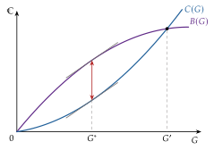
La metáfora del Leviatán, el monstruo bíblico de poder descomunal, es de Thomas Hobbes (1651), que la usó para defender la necesidad de someterse a un poder fuerte que proteja: su obra es a la vez una justificación del Estado absoluto y una teoría del contrato social. En la imagen, el grabado de la portada de la primera edición, de Abraham Bosse (dominio público, British Library).
↩︎Se suele citar el ejemplo de los países nórdicos, que financiaron su Estado del bienestar desde los años 60 subiendo sobre todo la imposición indirecta, de modo que la carga que percibían los ciudadanos subió menos.↩︎
La ilusión de la deuda: los votantes no perciben igual una subida de impuestos que un aumento de la deuda, que pueden ver en parte como riqueza neta. Depende de su racionalidad: con agentes plenamente racionales se cumple la equivalencia ricardiana y la ilusión desaparece [ver tema 3.A.39].↩︎
Choca con la dificultad de medirla en el sector público, donde la producción suele valorarse a su coste: ¿se valora a un juez por el número de sentencias o por su calidad?, ¿y cómo se mide esa calidad? Y queda la otra pregunta: ¿quién mide la productividad?↩︎
El argumento es circular. Para cada reparto de la riqueza hay una asignación de derechos que la maximiza, de modo que decidir el reparto por la maximización de la riqueza supone un reparto inicial dado. Igual de circular es decir que los derechos deben ir a quien más los valora, porque la valoración depende de los derechos que ya se tienen (solo valora con algo quien tiene algo con lo que valorar). Si conviene permitir una unidad más de contaminación, que quita derechos al usuario del río para dárselos a la fábrica, tiene que decidirse también con otros criterios además de la eficiencia.↩︎